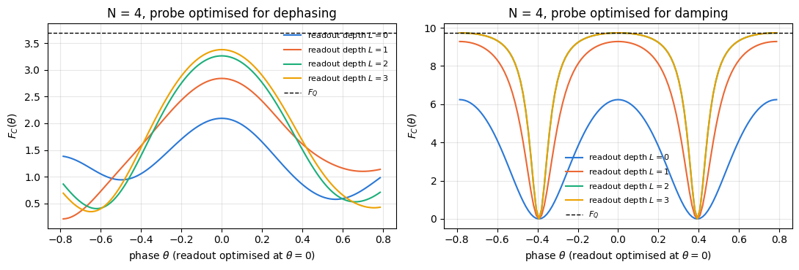

The notebooks of Chapter 10 built the quantum Fisher information (QFI) \(F_Q\) and the protocols that reach its two landmarks. For \(N\) two-level atoms (qubits) whose phase \(\theta\) is imprinted by the collective rotation \(e^{-i\theta J_z}\), with \(J_z=\tfrac12\sum_q Z_q\), an unentangled probe reaches at best \(F_Q=N\), the standard quantum limit, and the GHZ state \((\vert0\cdots0\rangle+\vert1\cdots1\rangle)/\sqrt2\) reaches \(F_Q=N^2\), the Heisenberg limit. The quantum Cramér–Rao bound \(\Delta\theta\ge1/\sqrt{MF_Q}\) for \(M\) repetitions turns these numbers into error bars (notebook 29).
Notebook 32 showed how fragile the second landmark is. Under independent dephasing of every atom the QFI of the GHZ state falls as \(N^2(1-2p)^{2N}\), and for large enough \(N\) this is smaller than the value \(N(1-2p)^2\) of the unentangled probe. Once noise is present, the GHZ state is in general no longer the best probe, and which probe is best depends on the noise. Huelga et al. (1997) found for dephasing that maximally entangled and uncorrelated atoms give the same frequency resolution and that partially entangled states do better. Escher, de Matos Filho and Davidovich (2011) showed for photon loss and for dephasing, and Demkowicz-Dobrzański, Kołodyński and Guţă (2012) for generic uncorrelated noise, that the quantum gain at large \(N\) shrinks to a constant factor (the review of Pezzè et al. (2018) collects these results for atomic ensembles). These results bound what is possible; at a given \(N\) and noise strength they do not hand us the state that achieves the best value.
For a handful of qubits that state can be found numerically with the tools of this chapter. We write the probe as the output of a parametrised circuit \(U(\boldsymbol\varphi)\), simulate the noise exactly on the density tensor, compute \(F_Q\) of the noisy output and climb its gradient with respect to the angles \(\boldsymbol\varphi\):
for a fixed encoding generator \(J_z\) and a fixed noise channel \(\mathcal E\). This is the variational eigensolver of notebook 42 with the energy replaced by the QFI. Numerical optimisation of the input state over the whole state space came first: Demkowicz-Dobrzański et al. (2009) found the optimal two-mode states of a lossy optical interferometer, and Macieszczak (2013) gave an alternating algorithm for the best input of a noisy channel. Parametrised circuits as the search space were proposed by Kaubruegger et al. (2019, 2021) for programmable atomic sensors and by Koczor, Endo, Jones, Matsuzaki and Benjamin (2020), who named the approach variational-state quantum metrology; Meyer, Borregaard and Eisert (2021) extended it to several parameters, and Marciniak et al. (2022) ran it on a trapped-ion sensor.
Two technical points make the problem different from the eigensolver. First, the cost is a nonlinear function of the density matrix, computed from its eigendecomposition, and differentiating through that eigendecomposition fails at exactly the states the optimiser is looking for. Second, \(F_Q\) is a bound: it is reached only by an optimal measurement, which is a second circuit to be optimised.
Road map.
Section 3 states the problem: the pipeline prepare → noise → encode → measure, why the order of noise and encoding does not matter for the three noise models (local dephasing, amplitude damping, particle loss), the QFI after particle loss as a weighted sum over surviving subsets, and closed forms for the GHZ, product and unbalanced-GHZ probes that serve as baselines and as checks.
Section 4 derives a variational formula for the QFI and from it a gradient that never differentiates an eigendecomposition, and checks it against finite differences and a Lyapunov solve; two wrong controls show what jax.grad through eigh returns at degenerate spectra.
Section 5 solves the noiseless problem for \(N=2,\dots,6\): the optimiser recovers \(F_Q=N^2\), with success rates and confidence intervals, and the optimum turns out to be a whole circle of GHZ states.
Sections 6 and 7 optimise under the three noise models, compare with GHZ, product and fairly tuned one-axis-twisted probes and with an optimisation over all states, and characterise the optimal states.
Section 8 optimises a readout circuit for the classical Fisher information of the measured bit strings, and compares it with parity and spin-counting readouts.
Section 9 collects practical lessons: compile and run time, local optima against circuit depth, and what happens when a probe meets a different noise from the one it was optimised for.
What you will learn
Physics
why the best probe depends on the noise, and what the optimal probes look like under dephasing, amplitude damping and particle loss for \(N\le6\);
the closed-form optimum among unbalanced GHZ states under amplitude damping, and where a general circuit beats it;
the difference between the QFI of a state and the classical Fisher information of an actual measurement, and how much circuit depth the measurement needs to close the gap.
Numerical methods
a variational formula \(F_Q=\max_X\mathrm{Tr}(\rho M_X)\) and the gradient it implies, which needs no derivative of an eigendecomposition;
why jax.grad through jnp.linalg.eigh gives NaN or silently wrong numbers at degenerate spectra;
the QFI after random particle loss as a sum over subsets, evaluated with a gather that can be vmapped;
fair comparisons: tuned baselines, step-size brackets, success rates with Wilson intervals, and wrong controls.
Implementation practice
lax.stop_gradient to separate the value of a function from the quantity that is differentiated;
one compiled training program per system size, with the noise channel and the step size as traced arguments;
compile time measured separately from run time.
Prerequisites
29 — quantum Fisher information: \(F_Q\), \(4\,\mathrm{Var}(G)\) for pure states, the standard quantum and Heisenberg limits;
Every notebook of this course starts with the same cell. Choose where to run (DEVICE) and the floating-point precision (PRECISION): "double" = float64/complex128 (default, recommended for physics), "single" = float32/complex64 (half the memory, faster on consumer GPUs, but watch the round-off). All code below derives its dtypes from RDTYPE/CDTYPE and its check tolerances from TOL, so nothing else needs to change.
Code
# ==============================================================================# CONFIGURATION -- adapt to your hardware, then run the notebook top to bottom# ==============================================================================DEVICE ="auto"# "auto": use a GPU if JAX finds one, else CPU | "cpu" | "gpu"PRECISION ="double"# "double": float64/complex128 | "single": float32/complex64import osif DEVICE =="cpu": os.environ["JAX_PLATFORMS"] ="cpu"# must be set BEFORE jax is importedimport stringfrom functools import partialimport mathimport numpy as npimport jaximport jax.numpy as jnpfrom jax import lax# Precision is configurable: "double" = float64/complex128 (default; needed for long time evolutions and# tight validation), "single" = float32/complex64 (half the memory, faster on consumer GPUs).# In a notebook PRECISION is defined in the Configuration cell; for this module use the env var QE_PRECISION.PRECISION =globals().get("PRECISION", os.environ.get("QE_PRECISION", "double"))jax.config.update("jax_enable_x64", PRECISION =="double")RDTYPE = jnp.float64 if PRECISION =="double"else jnp.float32 # real dtypeCDTYPE = jnp.complex128 if PRECISION =="double"else jnp.complex64 # complex dtype of all states/operatorsTOL =1e-10if PRECISION =="double"else1e-4# tolerance for sanity checks (asserts)_LETTERS = string.ascii_letters # the 52 einsum index labels a-z, A-Zimport timeimport matplotlib.pyplot as pltif DEVICE =="gpu"and jax.default_backend() =="cpu":print("WARNING: DEVICE='gpu' requested but JAX found no GPU -- running on CPU.")print(f"JAX {jax.__version__} | backend: {jax.default_backend()} | devices: {jax.devices()}")print(f"precision: {PRECISION} -> real {RDTYPE.__name__}, complex {CDTYPE.__name__}, check tolerance TOL={TOL:g}")
JAX 0.11.0 | backend: cpu | devices: [CpuDevice(id=0)]
precision: double -> real float64, complex complex128, check tolerance TOL=1e-10
2. Engine recap and notebook helpers
From the engine we need gates on states and density tensors, the Kraus channels, the GHZ and Dicke states, the pure- and mixed-state QFI, the one-axis-twisting evolution, the hardware-efficient ansatz and Adam. The helper cell adds plot settings, the Wilson interval of notebook 41 and two timing functions that separate compilation from execution.
Engine recap — the simulator primitives used in this notebook (click to expand)
# ==============================================================================# ENGINE RECAP: the functions of quantum_engine.py (SmoQ.jax) used in this notebook.# Each one is derived, with its mathematics and an independent check, in notebook 08b# (Chapter 3), 'Building the quantum simulator engine'.# States are rank-N tensors of shape (2,)*N; every operator acts through ONE einsum.# ==============================================================================# ----------------------------------------------------------------------------# 1. Elementary matrices: Paulis, Clifford generators, rotations# ----------------------------------------------------------------------------I2 = jnp.eye(2, dtype=CDTYPE)X = jnp.array([[0, 1], [1, 0]], dtype=CDTYPE)Y = jnp.array([[0, -1j], [1j, 0]], dtype=CDTYPE)Z = jnp.array([[1, 0], [0, -1]], dtype=CDTYPE)CNOT = jnp.array([[1, 0, 0, 0], [0, 1, 0, 0], [0, 0, 0, 1], [0, 0, 1, 0]], dtype=CDTYPE)CZ = jnp.diag(jnp.array([1, 1, 1, -1], dtype=CDTYPE))def rx(theta):"""Rotation about x: Rx(theta) = exp(-i theta X/2) = cos(theta/2) 1 - i sin(theta/2) X. Derivation: for any operator with P^2 = 1 the exponential series splits into even/odd parts, exp(-i a P) = cos(a) 1 - i sin(a) P. Here a = theta/2. `theta` may be a traced JAX scalar, so the gate is differentiable (jax.grad) and jit-able. """ c, s = jnp.cos(theta /2), jnp.sin(theta /2)return jnp.array([[c, -1j* s], [-1j* s, c]], dtype=CDTYPE)def ry(theta):"""Rotation about y: Ry(theta) = exp(-i theta Y/2) = [[cos, -sin], [sin, cos]](theta/2) (real matrix).""" c, s = jnp.cos(theta /2), jnp.sin(theta /2)return jnp.array([[c, -s], [s, c]], dtype=CDTYPE)def rz(theta):"""Rotation about z: Rz(theta) = exp(-i theta Z/2) = diag(e^{-i theta/2}, e^{+i theta/2}).""" e = jnp.exp(-0.5j* theta)return jnp.array([[e, 0], [0, jnp.conj(e)]], dtype=CDTYPE)# ----------------------------------------------------------------------------# 2. THE core primitive: a k-qubit operator acting on a tensor through ONE einsum# ----------------------------------------------------------------------------def apply_gate(psi, U, qubits):"""Apply a k-qubit operator U to the axes `qubits` of the tensor `psi`. MATH ---- One qubit (k=1), target q: psi'[s_0,..,a,..,s_{N-1}] = sum_b U[a,b] psi[s_0,..,b,..,s_{N-1}] Two qubits (k=2), targets (q1,q2); the 4x4 matrix is reshaped to U[a1,a2,b1,b2]: psi'[.., a1, .., a2, ..] = sum_{b1,b2} U[a1,a2,b1,b2] psi[.., b1, .., b2, ..] This IS the action of (1 x .. x U x .. x 1) -- written without ever building it. EINSUM TRANSLATION (generated automatically below) ------------------ N=3, q=1 : "db,abc->adc" d = new (output) index of qubit 1 N=4, q=(1,3) : "efbd,abcd->aecf" e,f = new indices of qubits 1 and 3 Recipe: label the axes of psi with letters a,b,c,...; give every target qubit a NEW letter (the next unused ones); U carries (new letters)+(old letters of the targets); the output is psi's labels with the target letters replaced by the new ones. IMPLEMENTATION NOTES -------------------- * reshape of U: (2^k,2^k) -> (2,)*2k. Row index = (a1..ak), column = (b1..bk), and the FIRST qubit in `qubits` is the most significant bit of the small matrix, i.e. it corresponds to the LEFT factor of kron(A,B). * `qubits` may be any distinct axes in any order: non-neighbouring gates cost the same. * U need not be unitary: projectors, Kraus operators and Hamiltonian terms reuse this. * psi may be ANY tensor with those axes of size 2: a state (rank N), a density tensor (rank 2N: ket axes 0..N-1, bra axes N..2N-1), ... COST O(2^k * 2^N) operations, O(2^N) memory (dense matrix: O(4^N) both). JAX `qubits` must be static Python ints (they define the einsum string); psi and U are traced, so the function can sit inside jit / grad / vmap / scan. """ qubits =tuple(int(q) for q in qubits) k, n =len(qubits), psi.ndim U = jnp.asarray(U, dtype=psi.dtype).reshape((2,) * (2* k)) # matrix -> rank-2k tensor inp =list(_LETTERS[:n]) # labels of psi's axes new = _LETTERS[n:n + k] # fresh labels for the outputs out = inp.copy()for a, q inzip(new, qubits): out[q] = a # target axes get the new labels sub =f"{''.join(new)}{''.join(inp[q] for q in qubits)},{''.join(inp)}->{''.join(out)}"return jnp.einsum(sub, U, psi)def apply_gate_dm(rho, U, qubits):"""Unitary on a density tensor: rho -> U rho U^dagger. MATH rho'[a..;a'..] = sum_{b,b'} U[a,b] rho[b..;b'..] U^*[a',b'] i.e. U acts on the KET axis q and the complex conjugate U^* on the BRA axis N+q. (A density matrix is "a state vector of 2N qubits": vectorisation |rho>> and U (x) U^* acting on it.) IMPLEMENTATION two calls of `apply_gate` -- the same einsum machinery, no new code. COST O(2^k 4^N). """ N = rho.ndim //2 rho = apply_gate(rho, U, qubits) # U on ket axesreturn apply_gate(rho, jnp.conj(jnp.asarray(U)), [N + q for q in qubits]) # U^* on bra axesdef apply_kraus_dm(rho, kraus, qubits):"""Quantum channel in Kraus form: rho -> sum_m K_m rho K_m^dagger, sum_m K_m^dag K_m = 1. EINSUM TRANSLATION (N=2, channel on qubit 0; g = Kraus index, summed!) "gea,gfc,abcd->ebfd" with operands K, K^*, rho [a=ket0, b=ket1, c=bra0, d=bra1; e, f = new ket0, bra0] All Kraus branches are summed INSIDE one einsum -- no Python loop over m. `kraus` has shape (M, 2^k, 2^k). """ qubits =tuple(int(q) for q in qubits) k, N =len(qubits), rho.ndim //2 K = jnp.asarray(kraus, dtype=rho.dtype).reshape((-1,) + (2,) * (2* k)) n = rho.ndim inp =list(_LETTERS[:n]) new_k, new_b, m = _LETTERS[n:n + k], _LETTERS[n + k:n +2* k], _LETTERS[n +2* k] out = inp.copy()for a, b, q inzip(new_k, new_b, qubits): out[q], out[N + q] = a, b ket_old ="".join(inp[q] for q in qubits) bra_old ="".join(inp[N + q] for q in qubits) sub =f"{m}{new_k}{ket_old},{m}{new_b}{bra_old},{''.join(inp)}->{''.join(out)}"return jnp.einsum(sub, K, jnp.conj(K), rho)# ----------------------------------------------------------------------------# 3. State preparation# ----------------------------------------------------------------------------def zero_state(N):"""|00...0>: a rank-N tensor of zeros with a single 1 at index (0,0,...,0). JAX arrays are immutable: `.at[idx].set(v)` returns an updated COPY (functional style)."""return jnp.zeros((2,) * N, dtype=CDTYPE).at[(0,) * N].set(1.0)_KETS = {"0": [1, 0], "1": [0, 1], "+": [1, 1], "-": [1, -1], "r": [1, 1j], "l": [1, -1j]}def product_state(spec):"""Product state from a string, one character per qubit: product_state('01+-') = |0>|1>|+>|->. ('r','l' = the +1/-1 eigenstates of Y.) MATH psi[s_0,...,s_{N-1}] = v0[s_0] v1[s_1] ... v_{N-1}[s_{N-1}] EINSUM an outer product = einsum with NO summed index: "a,b,c->abc". A product state needs only 2N numbers; entanglement is what makes all 2^N necessary. """ vecs = [jnp.array(_KETS[c], dtype=CDTYPE) / jnp.linalg.norm(jnp.array(_KETS[c], dtype=CDTYPE))for c in spec] n =len(vecs) sub =",".join(_LETTERS[i] for i inrange(n)) +"->"+ _LETTERS[:n]return jnp.einsum(sub, *vecs)def ghz_state(N):"""GHZ state (|0...0> + |1...1>)/sqrt(2): two non-zero entries of the rank-N tensor.""" psi = jnp.zeros((2,) * N, dtype=CDTYPE)return psi.at[(0,) * N].set(1/ jnp.sqrt(2.0)).at[(1,) * N].set(1/ jnp.sqrt(2.0))def dicke_state(N, k):"""Symmetric Dicke state |D_N^k>: equal superposition of all basis states with exactly k ones. Implementation: mask of the flat indices with popcount == k, normalised by sqrt(binom(N,k)).""" idx = np.arange(2** N) pop = np.array([bin(i).count("1") for i in idx]) v = (pop == k).astype(np.complex128)return jnp.asarray(v / np.linalg.norm(v), dtype=CDTYPE).reshape((2,) * N)def to_dm(psi):"""Pure state -> density TENSOR rho[s..; s'..] = psi[s..] psi^*[s'..] (rank 2N). An outer product: einsum "ab,AB->abAB" -- here via the equivalent tensordot(axes=0)."""return jnp.tensordot(psi, jnp.conj(psi), axes=0)def dm_matrix(rho):"""View a rank-2N density tensor as an ordinary 2^N x 2^N matrix (a reshape, no copy of meaning).""" d =int(round(np.sqrt(rho.size)))return rho.reshape(d, d)# ----------------------------------------------------------------------------# 4. Reduced density matrices & observables (matrix-free)# ----------------------------------------------------------------------------def rdm(psi, keep):"""Reduced density matrix of the qubits `keep` from a PURE state: rho_A = Tr_B |psi><psi|. MATH rho_A[a, a'] = sum_{b} psi[a, b] psi^*[a', b] (a: indices of A, b: of the rest B) EINSUM TRANSLATION N=3, keep=(0,): "abc,Abc->aA" with operands psi, psi^* * letters of B (b,c) appear in BOTH operands and not in the output -> summed = traced out * the kept axis gets a different letter in the second operand -> stays open (a and A) The full |psi><psi| (4^N numbers) is never formed; cost O(2^N 2^|A|). Returns a (2^|A|, 2^|A|) matrix with row/column order following `keep`. """ keep =tuple(int(q) for q in keep) n, k = psi.ndim, len(keep) a =list(_LETTERS[:n]) b = a.copy()for new, q inzip(_LETTERS[n:n + k], keep): b[q] = new sub =f"{''.join(a)},{''.join(b)}->{''.join(a[q] for q in keep)}{''.join(b[q] for q in keep)}"return jnp.einsum(sub, psi, jnp.conj(psi)).reshape(2** k, 2** k)# ----------------------------------------------------------------------------# 5. State characteristics: entropies, fidelity, negativity# ----------------------------------------------------------------------------def schmidt_values(psi, subsystem):"""Schmidt coefficients of the bipartition A|B with A = `subsystem`. MATH Group the tensor axes into a matrix M[(a),(b)] = psi[a,b] of shape (2^|A|, 2^|B|). Its SVD M = U diag(lambda) V^dag IS the Schmidt decomposition |psi> = sum_k lambda_k |u_k>_A |v_k>_B , rho_A has eigenvalues lambda_k^2. IMPLEMENTATION transpose (A axes first) -> reshape -> svd. No density matrix needed. """ A =tuple(int(q) for q in subsystem) B =tuple(q for q inrange(psi.ndim) if q notin A) M = jnp.transpose(psi, A + B).reshape(2**len(A), -1)return jnp.linalg.svd(M, compute_uv=False)def entanglement_entropy(psi, subsystem, base=2.0):"""Entanglement entropy S_A = -sum_k p_k log p_k with p_k = lambda_k^2 (squared Schmidt values). Product state: 0. Bell/GHZ across any cut: 1 bit. Random state: ~ |A| - 1/(2 ln2) 2^{|A|-|B|} (Page).""" p = jnp.clip(schmidt_values(psi, subsystem) **2, 1e-16, None)return-jnp.sum(p * jnp.log(p)) / jnp.log(base)# ----------------------------------------------------------------------------# 7. Noise channels (Kraus operators): density matrix and quantum-trajectory forms# ----------------------------------------------------------------------------def kraus_dephasing(p):"""Dephasing (phase-flip) channel rho -> (1-p) rho + p Z rho Z : coherences rho_01 -> (1-2p) rho_01."""return jnp.stack([jnp.sqrt(1- p) * I2, jnp.sqrt(p) * Z])def kraus_amplitude_damping(g):"""Amplitude damping (T1 decay |1> -> |0> with probability g): K0 = [[1,0],[0,sqrt(1-g)]] (no decay -- but the amplitude of |1> shrinks: 'no click' is information) K1 = [[0,sqrt(g)],[0,0]] (decay event = sqrt(g) |0><1| = sqrt(g) sigma^+, engine SP).""" K0 = jnp.array([[1, 0], [0, jnp.sqrt(1- g)]], dtype=CDTYPE) K1 = jnp.array([[0, jnp.sqrt(g)], [0, 0]], dtype=CDTYPE)return jnp.stack([K0, K1])# ----------------------------------------------------------------------------# 11. Collective spins, spin squeezing, quantum Fisher information# ----------------------------------------------------------------------------def apply_collective(psi, P, qubits=None):"""(sum_q P_q)|psi> for a single-qubit operator P -- N einsums, O(N 2^N). Note: NO factor 1/2 here; the collective spin is J_a = (1/2) sum_q sigma^a_q.""" qubits =range(psi.ndim) if qubits isNoneelse qubits out = jnp.zeros_like(psi)for q in qubits: out = out + apply_gate(psi, P, [q])return outdef qfi_pure(psi, P=Z, qubits=None):"""Quantum Fisher information of a pure state for the phase imprinted by exp(-i theta J), J = (1/2) sum_q P_q: F_Q = 4 Var(J) = <G^2> - <G>^2 with G = sum_q P_q = 2J. Cramer-Rao: Delta theta >= 1/sqrt(M F_Q). Product states F_Q <= N (standard quantum limit); GHZ: F_Q = N^2 (Heisenberg limit). Matrix-free: |phi> = G|psi>, <G^2> = <phi|phi>, <G> = <psi|phi>.""" phi = apply_collective(psi, P, qubits)return jnp.real(jnp.vdot(phi, phi)) - jnp.real(jnp.vdot(psi, phi)) **2def qfi_mixed(rho_mat, G_mat, tol=1e-12):"""QFI of a MIXED state (symmetric-logarithmic-derivative formula), rho = sum_m l_m |m><m|: F_Q = 2 sum_{m,n : l_m+l_n>0} (l_m - l_n)^2/(l_m + l_n) |<m|G|n>|^2 (G = generator, e.g. J). Reduces to 4 Var(G) for pure states. Dense eigendecomposition -> use on small / reduced states.""" lam, v = jnp.linalg.eigh(rho_mat) G = v.conj().T @ G_mat @ v num = (lam[:, None] - lam[None, :]) **2 den = lam[:, None] + lam[None, :]return2* jnp.sum(jnp.where(den > tol, num / jnp.where(den > tol, den, 1.0), 0.0) * jnp.abs(G) **2)def collective_dense(P, n):"""Dense J = (1/2) sum_q P_q on n qubits (input of `qfi_mixed`), built from the matrix-free action on the basis vectors (vmap), exactly like `dense_hamiltonian`.""" eye = jnp.eye(2** n, dtype=CDTYPE).reshape((2** n,) + (2,) * n)return0.5* jax.vmap(lambda e: apply_collective(e, P).reshape(-1))(eye).Tdef oat_evolve(psi, chi_t):"""One-axis twisting exp(-i chi t J_z^2) applied EXACTLY. J_z is diagonal in the computational basis with eigenvalue m(s) = sum_q (1/2 - s_q), so the evolution multiplies each amplitude by a phase exp(-i chi t m^2): O(2^N), no Trotter error, no gates. m(s) is assembled by BROADCASTING N arrays of shape (1,..,2,..,1) -- a tensor-network-free way of writing a sum over sites. [Note: chi sum_{i<j} Z_i Z_j = 2 chi J_z^2 - chi N/2.]""" N = psi.ndim m =sum(jnp.array([0.5, -0.5]).reshape([2if a == q else1for a inrange(N)]) for q inrange(N))return psi * jnp.exp(-1j* chi_t * m **2)# ----------------------------------------------------------------------------# 15. Variational circuits: ansatz, gradients, optimizers# ----------------------------------------------------------------------------def hea_num_params(N, layers):"""Number of angles of `hardware_efficient_ansatz`: (layers+1) rotation blocks x N qubits x 2 angles."""return2* N * (layers +1)def hardware_efficient_ansatz(theta, N, layers, entangler=CZ, periodic=False):"""Hardware-efficient ansatz |psi(theta)> = R(theta_L) * prod_{l<L} [ ENT * R(theta_l) ] |0...0>, R = prod_q Rz(.) Ry(.), ENT = a chain of CZ (or any 2-qubit gate). `theta` is a flat vector of length 2N(L+1). The function is a pure map theta -> state, hence jit-able and differentiable end to end.""" theta = theta.reshape(layers +1, N, 2) psi = zero_state(N)for l inrange(layers +1):for q inrange(N): psi = apply_gate(psi, ry(theta[l, q, 0]), [q]) psi = apply_gate(psi, rz(theta[l, q, 1]), [q])if l < layers:for q inrange(N -1): psi = apply_gate(psi, entangler, [q, q +1])if periodic and N >2: psi = apply_gate(psi, entangler, [N -1, 0])return psidef adam_init(theta):"""Adam state: (first moment m, second moment v, step counter t)."""return (jnp.zeros_like(theta), jnp.zeros_like(theta), 0)def adam_update(theta, g, state, lr=0.05, b1=0.9, b2=0.999, eps=1e-8):"""One Adam step (Kingma & Ba): m <- b1 m + (1-b1) g, v <- b2 v + (1-b2) g^2, theta <- theta - lr * m_hat / (sqrt(v_hat) + eps), hats = bias-corrected moments. Momentum (m) averages noisy gradients (great with SPSA); v gives a per-parameter step size.""" m, v, t = state t = t +1 m = b1 * m + (1- b1) * g v = b2 * v + (1- b2) * g **2 theta = theta - lr * (m / (1- b1 ** t)) / (jnp.sqrt(v / (1- b2 ** t)) + eps)return theta, (m, v, t)
Code
# ==============================================================================# PLOT STYLE + small helpers# ==============================================================================import itertoolsPALETTE = ["#2a78d6", "#eb6834", "#1baf7a", "#eda100", "#e87ba4", "#4a3aa7"] # colour-blind-friendly, fixed orderMARKERS = ["o", "s", "^", "D", "v", "P"]plt.rcParams.update({"axes.prop_cycle": plt.cycler(color=PALETTE), "axes.grid": True,"grid.alpha": 0.3, "font.size": 10, "legend.frameon": False})def max_abs(a):"""Largest absolute entry of an array, as a Python float."""returnfloat(jnp.max(jnp.abs(jnp.asarray(a))))def wilson_interval(k, n, z=1.96):"""95% Wilson score interval for a success probability estimated as k successes out of n runs (notebook 41). MATH centre = (p + z^2/2n) / (1 + z^2/n), half-width = z sqrt(p(1-p)/n + z^2/4n^2) / (1 + z^2/n), p = k/n. """ p = k / n d =1+ z **2/ n c = (p + z **2/ (2* n)) / d hw = z * np.sqrt(p * (1- p) / n + z **2/ (4* n **2)) / dreturnmax(0.0, c - hw), min(1.0, c + hw)def compile_timed(fn, *args):"""Compile `jax.jit(fn)` ahead of time for these argument shapes (notebook 44). JAX `jit(fn).lower(*args).compile()` traces and compiles WITHOUT executing; calling the returned object is then pure run time. Returns (compiled function, compile seconds). """ t0 = time.perf_counter() compiled = jax.jit(fn).lower(*args).compile()return compiled, time.perf_counter() - t0def run_timed(compiled, *args):"""Run an already compiled function once; returns (output, run seconds).""" t0 = time.perf_counter() out = jax.block_until_ready(compiled(*args))return out, time.perf_counter() - t0
3. The optimisation problem
3.1 The pipeline
Every experiment below has four stages.
Prepare. A circuit \(U(\boldsymbol\varphi)\) acts on \(\vert0\cdots0\rangle\). We use the hardware-efficient ansatz of notebook 40: \(L\) layers, each a rotation \(R_z R_y\) on every qubit followed by a chain of CZ gates, and a final rotation layer, \(2N(L+1)\) angles in total. Unless stated otherwise \(L=N\).
Noise. The same single-qubit channel \(\mathcal E\) acts on every qubit; \(\mathcal E^{\otimes N}\) denotes the whole map.
Encode. The phase is imprinted by \(U_\theta=e^{-i\theta J_z}=\bigotimes_q R_z(\theta)\), with \(R_z(\theta)=e^{-i\theta Z/2}\).
Figure 1. The four stages for \(N=4\). The probe angles \(\boldsymbol\varphi\) are optimised for the quantum Fisher information of the state after the encoding, Eq. (2), with the gradient of Section 4 (Sections 5–7). The readout angles \(\boldsymbol\phi\) are optimised for the classical Fisher information of the measured bit strings, Eq. (14) (Section 8).
3.2 Noise before or after the encoding is the same map
The two single-qubit channels with Kraus operators are
local dephasing with \(K_0=\sqrt{1-p}\,\mathbb 1\), \(K_1=\sqrt p\,Z\), which multiplies the coherence \(\rho_{01}\) by \(1-2p\) and leaves the populations alone;
amplitude damping with \(K_0=\mathrm{diag}(1,\sqrt{1-g})\), \(K_1=\sqrt g\,\vert0\rangle\langle1\vert\), which moves population from \(\vert1\rangle\) to \(\vert0\rangle\) with probability \(g\).
Both commute with \(R_z(\theta)=\mathrm{diag}(e^{-i\theta/2},e^{i\theta/2})\) up to a phase: \(K_0\) and \(Z\) are diagonal, and \(R_z K_1 R_z^\dagger=e^{-i\theta}K_1\), a phase that cancels in \(K_1\rho K_1^\dagger\). Hence \(\mathcal E(R_z\rho R_z^\dagger)=R_z\mathcal E(\rho)R_z^\dagger\) (notebook 32, Section 10). This covariance is a property of these two channels: a bit flip, \(K_1=\sqrt p\,X\), does not have it, since \(R_zXR_z^\dagger\) is not a multiple of \(X\). For dephasing and damping, noise during or after the encoding gives the same \(\rho_\theta\) as Eq. (1), and \(\rho_\theta\) is a unitary orbit of the noisy probe \(\sigma(\boldsymbol\varphi)=\mathcal E^{\otimes N}(\vert\psi\rangle\langle\psi\vert)\). The QFI of a unitary orbit does not depend on \(\theta\) (notebook 30, Section 5.5), so the cost function is
The third noise model removes particles. Each particle survives independently with probability \(\eta\), and we assume that the experiment records which particles survived (as when the atoms of a tweezer array are imaged at the end); this is a different model from the deterministic loss of \(k\) particles in notebook 37. With probability \(p_S=\eta^{\vert S\vert}(1-\eta)^{N-\vert S\vert}\) the survivors are the subset \(S\), and their state is the reduced state \(\rho_S=\mathrm{Tr}_{\bar S}\vert\psi\rangle\langle\psi\vert\), on which the phase acts through \(J_z^{(S)}=\tfrac12\sum_{q\in S}Z_q\) because a lost particle carries no phase. Loss also commutes with the encoding, since tracing out a qubit removes its \(R_z\) factor.
Because the record of \(S\) is classical and does not depend on \(\theta\), the total state is block diagonal, \(\rho_\theta=\bigoplus_S p_S\,\rho_{S,\theta}\). If \(L_S\) is the symmetric logarithmic derivative (SLD) of block \(S\), that is \(\partial_\theta\rho_{S,\theta}=\tfrac12(\rho_{S,\theta}L_S+L_S\rho_{S,\theta})\), then \(L=\bigoplus_S L_S\) satisfies the same equation for \(\rho_\theta\), since the weights \(p_S\) are constants. The QFI \(F_Q=\mathrm{Tr}(\rho_\theta L^2)\) therefore splits into blocks:
with \(F\) from Eq. (2) or Eq. (3). The Heisenberg limit is still an upper bound. The Kraus branches \(K_{k_1}\otimes\cdots\otimes K_{k_N}\vert\psi\rangle\) of the noisy state are pure states, each with \(F_Q\le N^2\) (a pure state has \(F_Q=4\,\mathrm{Var}(J_z)\le N^2\)), and \(F_Q\) is convex (notebook 30, Section 5.5), so \(F\le N^2\); in Eq. (3) every term has \(F_Q\le\vert S\vert^2\le N^2\) and the weights sum to at most one.
3.5 Baselines in closed form
GHZ. Under dephasing the GHZ state stays in the two-dimensional space spanned by \(\vert\bar0\rangle=\vert0\cdots0\rangle\) and \(\vert\bar1\rangle=\vert1\cdots1\rangle\) with coherence reduced by \((1-2p)^N\), and notebook 32 (Eq. 16) derives \(F_Q=N^2(1-2p)^{2N}\). Under amplitude damping the coherence \(\vert\bar1\rangle\langle\bar0\vert\) survives only in the branch with no decay, where it is multiplied by \((1-g)^{N/2}\); all other branches produce diagonal terms. Inside the block \(\{\vert\bar0\rangle,\vert\bar1\rangle\}\) the populations are \(\tfrac12(1+g^N)\) and \(\tfrac12(1-g)^N\) (the first collects the branch in which all \(N\) atoms decay), and the diagonal remainder commutes with \(J_z\) and contributes no QFI. A two-level block of total weight \(w\), coherence \(c\) and generator eigenvalues \(\pm N/2\) is \(w\) times a qubit with transverse Bloch component \(r_\perp=2\vert c\vert/w\) and generator \(\tfrac N2\sigma_z\), so its QFI is \(w\,N^2r_\perp^2=4N^2\vert c\vert^2/w\) (the single-qubit QFI \(r_\perp^2\) is derived in notebook 31, Section 15.3; blocks add as in Section 3.3). Under loss, every reduced state of a GHZ state on a proper subset is \(\tfrac12(\vert0\cdots0\rangle\langle0\cdots0\vert+\vert1\cdots1\rangle\langle1\cdots1\vert)\), which commutes with \(J_z^{(S)}\), so only \(S=\{1,\dots,N\}\) contributes. Together:
Product states. For a product state and a channel acting on each qubit separately, the noisy state is a product \(\bigotimes_q\rho_q\) and the generator a sum. The sum of the single-qubit SLDs, \(L=\sum_qL_q\), solves the SLD equation, and in \(\mathrm{Tr}(\rho L^2)\) the cross terms are \(\mathrm{Tr}(\rho_qL_q)\,\mathrm{Tr}(\rho_rL_r)=0\), because \(\mathrm{Tr}(\rho_qL_q)=\mathrm{Tr}(\partial_\theta\rho_q)=0\). The QFI is therefore the sum of single-qubit values \(r_\perp^2\). A qubit with polar angle \(\vartheta\) has \(r_\perp=\sin\vartheta\) before the noise; dephasing multiplies it by \(1-2p\), damping by \(\sqrt{1-g}\), and loss keeps it with probability \(\eta\). In all three cases \(\vartheta=\pi/2\) is best, so the best product state is \(\vert+\rangle^{\otimes N}\) with
Unbalanced GHZ under damping. The populations of the block in Eq. (5b) are unequal, which suggests compensating in the input. For \(\sqrt s\,\vert\bar0\rangle+\sqrt{1-s}\,\vert\bar1\rangle\) the same steps give populations \(s+(1-s)g^N\) and \((1-s)(1-g)^N\), coherence \(\sqrt{s(1-s)}\,(1-g)^{N/2}\), and with \(h=g^N+(1-g)^N\)
Setting \(F'(s)=0\) gives \((1-2s)(h+s(1-h))-s(1-s)(1-h)=0\), which simplifies to \((1-h)s^2+2hs-h=0\), whose root in \([0,1]\) is \(s^\ast=(\sqrt h-h)/(1-h)=\sqrt h/(1+\sqrt h)\). Then \(s^\ast(1-s^\ast)=\sqrt h/(1+\sqrt h)^2\) and \(s^\ast+(1-s^\ast)h=\sqrt h\), so
At \(g\to0\), \(h\to1\), \(s^\ast\to\tfrac12\) and \(F^\ast\to N^2\). For \(g>0\), \(s^\ast<\tfrac12\): the optimal input puts more weight on \(\vert1\cdots1\rangle\), the component that decays, and so compensates for the population that the decay moves into \(\vert0\cdots0\rangle\). Under dephasing and loss the analogous calculation gives \(4s(1-s)\) times Eq. (5a) or (5c), so the balanced GHZ state is the best of its family there.
One-axis-twisted probes. The third family is that of notebooks 33 and 34 (Kitagawa and Ueda 1993), \(\vert\psi_{\rm OAT}(\mu,a,b)\rangle=e^{-ibJ_y}e^{-iaJ_x}e^{-i\mu J_z^2}\vert+\rangle^{\otimes N}\). Small twisting strengths \(\mu\) give spin-squeezed states, and at \(\mu=\pi/2\) the twisting produces a cat state, which the two rotations can turn into a GHZ state along \(z\) (notebook 34, Section 4). The family has no closed form under noise; we tune \((\mu,a,b)\) numerically for every channel and every \(N\) (Step 6), so that the comparison with the variational probe is fair.
The cell evaluates Eqs. (5)–(8) at the noise strengths used throughout: \(p=0.1\) (coherence factor \(0.8\) per qubit), \(g=0.2\) and \(\eta=0.8\).
Code
# ==============================================================================# STEP 1: the generator, the noise on every qubit, and the closed-form baselines# ==============================================================================def jz_diagonal(N):"""Diagonal of J_z = (1/2) sum_q Z_q in the computational basis, as a flat array of length 2^N. MATH J_z |s> = m(s) |s>, m(s) = sum_q (1/2 - s_q) (s_q = 0 is spin up, +1/2) IMPLEMENTATION broadcast sum of N arrays (1/2, -1/2) placed on different axes, as in the engine's `oat_evolve`. """ m =sum(np.array([0.5, -0.5]).reshape([2if a == q else1for a inrange(N)]) for q inrange(N))return jnp.asarray(m.reshape(-1), dtype=RDTYPE)def channel_on_all(rho, kraus):"""The same single-qubit channel on every qubit of a density tensor: rho -> (E x E x ... x E)(rho). MATH E(r) = sum_k K_k r K_k^dagger on each qubit; N calls of the engine's `apply_kraus_dm`. COST O(N 4^N) per call. `kraus` is a traced array (2, 2, 2), so dephasing and damping share one compilation. """for q inrange(rho.ndim //2): rho = apply_kraus_dm(rho, kraus, [q])return rhodef f_ghz_dephasing(N, p):"""Eq. (5a): F_Q of a GHZ state after local dephasing, N^2 (1-2p)^(2N) (notebook 32, Eq. 16)."""return N **2* (1-2* p) ** (2* N)def f_ghz_damping(N, g):"""Eq. (5b): F_Q of a GHZ state after local amplitude damping, 2 N^2 (1-g)^N / (1 + g^N + (1-g)^N)."""return2* N **2* (1- g) ** N / (1+ g ** N + (1- g) ** N)def f_ghz_loss(N, eta):"""Eq. (5c): F_Q of a GHZ state after independent particle loss (survival probability eta), eta^N N^2."""return eta ** N * N **2def f_unbalanced_ghz_damping(N, g, s):"""Eq. (7): F_Q of sqrt(s)|0..0> + sqrt(1-s)|1..1> after amplitude damping. MATH F = 4 N^2 (1-g)^N s (1-s) / (s + (1-s) h), h = g^N + (1-g)^N """ h = g ** N + (1- g) ** Nreturn4* N **2* (1- g) ** N * s * (1- s) / (s + (1- s) * h)def best_unbalanced_ghz_damping(N, g):"""Eq. (8): the optimum of Eq. (7) over s: s* = sqrt(h)/(1+sqrt(h)), F* = 4 N^2 (1-g)^N / (1+sqrt(h))^2.""" h = g ** N + (1- g) ** Nreturn np.sqrt(h) / (1+ np.sqrt(h)), 4* N **2* (1- g) ** N / (1+ np.sqrt(h)) **2# PARAMETERS ------------------------------------------------------------------P_DEPH =0.10# dephasing: coherence factor 1 - 2p = 0.8 per qubitG_DAMP =0.20# amplitude damping: decay probability of |1> per qubitETA =0.80# particle loss: survival probability per particleN_LIST = [2, 3, 4, 5, 6]KRAUS = {"dephasing": kraus_dephasing(P_DEPH), "damping": kraus_amplitude_damping(G_DAMP)}CHANNELS = ["dephasing", "damping", "loss"]print(f"{'N':>2s} | {'GHZ deph':>9s}{'prod deph':>9s} | {'GHZ damp':>9s}{'prod damp':>9s}{'s*':>6s} "f"{'unbal. GHZ':>10s} | {'GHZ loss':>9s}{'prod loss':>9s}")for N in N_LIST: s_star, f_star = best_unbalanced_ghz_damping(N, G_DAMP)print(f"{N:2d} | {f_ghz_dephasing(N, P_DEPH):9.4f}{N * (1-2* P_DEPH) **2:9.4f} | "f"{f_ghz_damping(N, G_DAMP):9.4f}{N * (1- G_DAMP):9.4f}{s_star:6.4f}{f_star:10.4f} | "f"{f_ghz_loss(N, ETA):9.4f}{N * ETA:9.4f}")
Three features of this table set the scene. Under dephasing the GHZ value peaks at \(N=4\)–\(5\) and the product state overtakes it from \(N=5\) on (\(3.20\) against \(2.68\)), the crossover described in notebook 32. Under damping the GHZ state stays far ahead of the product state up to \(N=6\) (\(14.95\) against \(4.80\)), and the unbalanced GHZ state of Eq. (8) improves on it by \(0.03\) at \(N=2\) and by \(1.56\) at \(N=6\), with \(s^\ast\) falling from \(0.452\) to \(0.339\). Under loss the GHZ state is also ahead (\(9.44\) against \(4.80\) at \(N=6\)), but its advantage decays as \(\eta^N\).
4. Differentiating the quantum Fisher information of a noisy state
4.1 Gradients through an eigendecomposition at degenerate spectra
The mixed-state QFI is computed from the eigendecomposition \(\sigma=\sum_k\lambda_k\vert k\rangle\langle k\vert\) (notebook 30, Eq. 11):
Applying jax.grad to this formula differentiates the eigenvectors, and the derivative of an eigenvector contains \(1/(\lambda_k-\lambda_l)\) for every other eigenvalue \(\lambda_l\). Noisy GHZ-like states have exactly degenerate spectra (the dephased GHZ state has rank two and \(2^N-2\) zero eigenvalues), and a pure state has \(2^N-1\) zero eigenvalues. Such states are met along the optimisation: without noise every probe is pure, and under damping and loss the optimum at small \(N\) is GHZ-like (Section 6). Notebook 30 (Exercise 8) proposed solving the SLD equation, a Lyapunov equation, as a linear system instead, which is differentiable when \(\sigma\) has full rank; at rank-deficient states its matrix is singular, and its size \(4^N\times4^N\) (\(4096\times4096\) at \(N=6\)) makes every evaluation an \(O(64^N)\) solve. We need a third route.
4.2 A variational formula for the QFI
Let \(L\) be the SLD of \(\sigma\), \(\partial_\theta\sigma=\tfrac12(\sigma L+L\sigma)\), and let \(X\) be any Hermitian matrix. Define
Inserting the SLD equation, \(2\,\mathrm{Tr}(X\partial_\theta\sigma)=\mathrm{Tr}(X\sigma L+XL\sigma)=\mathrm{Tr}\big(\sigma(LX+XL)\big)\), and completing the square,
The first term is \(F_Q\). The second is non-negative, because \(\sigma\ge0\) and \((X-L)^2\ge0\), and vanishes at \(X=L\). Hence
\[f(X)\le F_Q[\sigma]\quad\text{for every Hermitian }X,\qquad f(L)=F_Q[\sigma]. \tag{10}\]
This variational characterisation of the QFI is given, with an iterative algorithm built on it, by Macieszczak (2013). For the unitary encoding \(\partial_\theta\sigma=-i[J_z,\sigma]\), cyclicity of the trace gives \(\mathrm{Tr}(X\partial_\theta\sigma)=-i\,\mathrm{Tr}(XJ_z\sigma-X\sigma J_z)=-i\,\mathrm{Tr}\big(\sigma[X,J_z]\big)=i\,\mathrm{Tr}\big(\sigma[J_z,X]\big)\), so \(f\) is the expectation value of a Hermitian observable:
4.3 The gradient, without differentiating an eigendecomposition
Fix the angles \(\boldsymbol\varphi_0\), let \(L_0\) be the SLD of \(\sigma(\boldsymbol\varphi_0)\), and consider \(d(\boldsymbol\varphi)=F(\boldsymbol\varphi)-\mathrm{Tr}\big(\sigma(\boldsymbol\varphi)M_{L_0}\big)\). By Eq. (10), \(d\ge0\) for every \(\boldsymbol\varphi\), and \(d(\boldsymbol\varphi_0)=0\). So \(\boldsymbol\varphi_0\) is a minimum of \(d\). If \(F\) is differentiable at \(\boldsymbol\varphi_0\), so is \(d\) (the second term is a smooth function of the angles), and the gradient of \(d\) vanishes at its minimum:
The right-hand side is the gradient of the expectation value of a fixed observable in a noisy circuit, the quantity that reverse-mode differentiation through Kraus channels computes in notebook 44. The SLD enters only as a constant. Equation (10) gives more than the gradient: \(\mathrm{Tr}(\sigma(\boldsymbol\varphi)M_{L_0})\) is a lower bound of \(F\) that touches it at \(\boldsymbol\varphi_0\), so a step that raises this lower bound by \(\delta\) raises \(F\) by at least \(\delta\). This holds also at the points where \(F\) is not differentiable, such as rank changes (notebook 30, Section 5.3).
From formula to code.qfi_and_sld evaluates Eq. (9) and the SLD in the eigenbasis exactly as in notebook 30. Since \(J_z\) is diagonal with entries \(m(s)\), the commutator in Eq. (11) is elementwise, \([J_z,L]_{st}=(m_s-m_t)L_{st}\). qfi_dm implements Eq. (12) with lax.stop_gradient, which returns its argument unchanged but has zero derivative: the SLD is computed from stop_gradient(rho), so no derivative ever reaches eigh, and the returned number
(\(\mathrm{sg}\) = stop-gradient) has the value \(F_Q[\sigma]\) and the gradient of Eq. (12). For particle loss, qfi_after_loss evaluates Eq. (3). The reduced state of a subset \(S\) of size \(k\) is \(\rho_S=AA^\dagger\), where \(A\) is the \(2^k\times2^{N-k}\) matrix obtained by moving the axes of \(S\) to the front of the amplitude tensor; that permutation is precomputed as an index array (loss_tables), so the \(\binom Nk\) subsets of one size become a single vmap over a gather.
Code
# ==============================================================================# STEP 2: the QFI, its SLD, and a differentiable QFI built on the minorant of Eq. (12)# ==============================================================================def qfi_and_sld(rho_mat, m, tol=1e-12):"""QFI of rho for the unitary family exp(-i theta G) rho exp(i theta G), G = diag(m), and its SLD L. MATH rho = sum_k lam_k |k><k|, (d rho)_{kl} = <k| -i[G, rho] |l> = -i G_kl (lam_l - lam_k) L_kl = 2 (d rho)_kl / (lam_k + lam_l) for lam_k + lam_l > tol, else 0 (notebook 30) F_Q = 2 sum_kl |(d rho)_kl|^2 / (lam_k + lam_l) (Eq. 9) IMPLEMENTATION one `eigh`; the division is guarded by a double `jnp.where` (no inf/NaN). COST O(d^3), d = 2^N. Returns (F_Q, L) with L in the computational basis. """ lam, V = jnp.linalg.eigh(rho_mat) G = (V.conj().T * m[None, :]) @ V # G in the eigenbasis of rho drho =-1j* G * (lam[None, :] - lam[:, None]) den = lam[:, None] + lam[None, :] ok = den > tol safe = jnp.where(ok, den, 1.0) F =2.0* jnp.sum(jnp.where(ok, jnp.abs(drho) **2/ safe, 0.0)) L = V @ jnp.where(ok, 2.0* drho / safe, 0.0) @ V.conj().Treturn F, Ldef qfi_dm(rho_mat, m, tol=1e-12):"""Differentiable QFI of a density matrix: the VALUE is F_Q[rho], the GRADIENT is that of Tr(rho M_L), Eq. (12). MATH M_X = 2i[G, X] - X^2 ; Tr(rho M_X) <= F_Q[rho] for every Hermitian X, with equality at X = L (Eq. 11) => grad F_Q = grad Tr(rho(phi) M_L) at fixed L (Eq. 12) [G, L]_kl = (m_k - m_l) L_kl because G is diagonal. JAX L is computed from `lax.stop_gradient(rho)`: no derivative ever flows through `eigh`, so degenerate spectra (rank-deficient noisy states) cannot produce NaN. The returned number is Tr(rho M_L) - stop_gradient(Tr(rho M_L)) + F_Q, whose value is F_Q and whose gradient is grad Tr(rho M_L). """ F, L = qfi_and_sld(lax.stop_gradient(rho_mat), m, tol) L = lax.stop_gradient(L) M =2j* (m[:, None] - m[None, :]) * L - L @ L val = jnp.real(jnp.trace(rho_mat @ M))return val - lax.stop_gradient(val) + Fdef qfi_after_channel(psi, kraus):"""F_Q of the probe psi after the single-qubit channel `kraus` on every qubit, generator J_z.""" N = psi.ndim rho = channel_on_all(to_dm(psi), kraus)return qfi_dm(dm_matrix(rho), jz_diagonal(N))def loss_tables(N):"""Index tables for the survivor states of Eq. (3): for every number k = 1..N-1 of surviving particles, one row per subset S of size k, giving the permutation of the flat amplitude vector that brings the axes of S to the front. IMPLEMENTATION `np.transpose` of an index tensor; the permutation is then a GATHER `psi_flat[perm]`, which can be vmapped over subsets (a transpose with a different axis order per subset could not be). RETURNS list of (k, perms[n_subsets, 2^N]). """ idx = np.arange(2** N).reshape((2,) * N) out = []for k inrange(1, N): perms = [np.transpose(idx, list(S) + [q for q inrange(N) if q notin S]).reshape(-1)for S in itertools.combinations(range(N), k)] out.append((k, jnp.asarray(np.array(perms))))return outdef qfi_after_loss(psi, eta, tables):"""F_Q of a pure probe after independent particle loss, Eq. (3): F = sum_S eta^|S| (1-eta)^(N-|S|) F_Q[rho_S, J_z^(S)], rho_S = Tr_{not S} |psi><psi|. IMPLEMENTATION |S| = N: pure state, F = 4 Var(J_z) (engine `qfi_pure`); |S| = 0 contributes nothing; 1 <= |S| < N: rho_S = A A^dagger with A the amplitude matrix (2^k x 2^(N-k)) after the permutation, one vmapped `qfi_dm` per subset size. COST sum_k binom(N,k) O(8^k): dominated by the N subsets of size N-1. """ N = psi.ndim flat = psi.reshape(-1) total = eta ** N * qfi_pure(psi)for k, perms in tables: m_k = jz_diagonal(k)def one_subset(perm): A = flat[perm].reshape(2** k, 2** (N - k))return qfi_dm(A @ A.conj().T, m_k) total = total + eta ** k * (1- eta) ** (N - k) * jnp.sum(jax.vmap(one_subset)(perms))return total
4.4 Checkpoints
The first cell checks three things on independent references:
(a) values: qfi_dm against the engine’s qfi_mixed (a separate implementation of Eq. 9 that uses a dense \(J_z\)) on a random noisy probe, and against Eqs. (5a)–(5c) for GHZ states;
(b) loss: the gather-and-vmap evaluation of Eq. (3) against a brute-force loop over all subsets with the engine’s rdm and qfi_mixed;
(c) gradients: Eq. (12) against central finite differences of the value (\(\epsilon=10^{-5}\), error of order \(\epsilon^2\) plus round-off, about \(10^{-10}\) here) and against jax.grad through the vectorised Lyapunov solve of notebook 30, which is legitimate here because the random noisy probe has full rank.
Code
# ==============================================================================# CHECKPOINT 1: values against the engine and the closed forms; gradients three ways; two wrong controls# ==============================================================================N_C, L_C =3, 3m_C = jz_diagonal(N_C)G_C = collective_dense(Z, N_C) # dense J_z for the engine's `qfi_mixed`theta_C = jax.random.uniform(jax.random.PRNGKey(5), (hea_num_params(N_C, L_C),), minval=-np.pi, maxval=np.pi)def rho_hea(theta, kraus, N=N_C, L=L_C):"""Noisy output of the hardware-efficient probe circuit, as a 2^N x 2^N matrix."""return dm_matrix(channel_on_all(to_dm(hardware_efficient_ansatz(theta, N, L)), kraus))# (a) values: engine qfi_mixed and the closed forms of Eqs. (5)print("(a) values")for name, kraus in KRAUS.items(): a =float(qfi_dm(rho_hea(theta_C, kraus), m_C)) b =float(qfi_mixed(rho_hea(theta_C, kraus), G_C))print(f" random probe, {name:9s}: qfi_dm = {a:.12f} engine qfi_mixed = {b:.12f} diff = {abs(a - b):.1e}")assertabs(a - b) <1e3* TOLfor N in [3, 4]: ghz = to_dm(ghz_state(N)) vals = [(float(qfi_dm(dm_matrix(channel_on_all(ghz, KRAUS["dephasing"])), jz_diagonal(N))), f_ghz_dephasing(N, P_DEPH)), (float(qfi_dm(dm_matrix(channel_on_all(ghz, KRAUS["damping"])), jz_diagonal(N))), f_ghz_damping(N, G_DAMP)), (float(qfi_after_loss(ghz_state(N), ETA, loss_tables(N))), f_ghz_loss(N, ETA))]print(f" GHZ N={N}: numerics vs Eq. (5a,b,c): "+", ".join(f"{x:.10f}/{y:.10f}"for x, y in vals))assertall(abs(x - y) <1e3* TOL for x, y in vals)# (b) loss: Eq. (3) against an independent brute-force sum with the engine's rdm and qfi_mixedpsi_r = hardware_efficient_ansatz(theta_C, N_C, L_C)brute =sum(ETA ** k * (1- ETA) ** (N_C - k) *float(qfi_mixed(rdm(psi_r, S), collective_dense(Z, k)))for k inrange(1, N_C +1) for S in itertools.combinations(range(N_C), k))fast =float(qfi_after_loss(psi_r, ETA, loss_tables(N_C)))print(f"(b) loss, random probe: gather/vmap = {fast:.12f} brute force over subsets = {brute:.12f}")assertabs(fast - brute) <1e3* TOL# (c) gradients: Eq. (12) against central finite differences of the value and against jax.grad of a Lyapunov solvedef qfi_lyapunov(rho_mat, m):"""F_Q from the vectorised Lyapunov equation (notebook 30, Exercise 8): differentiable when rho has full rank. MATH (1/2)(rho x 1 + 1 x rho^T) vec(L) = vec(d rho) (row-major vec), F_Q = Tr(d rho L) COST a 4^N x 4^N linear solve: O(64^N), affordable only for validation at small N. """ d = rho_mat.shape[0] drho =-1j* (m[:, None] - m[None, :]) * rho_mat A =0.5* (jnp.kron(rho_mat, jnp.eye(d)) + jnp.kron(jnp.eye(d), rho_mat.T)) L = jnp.linalg.solve(A, drho.reshape(-1)).reshape(d, d)return jnp.real(jnp.trace(drho @ L))print("(c) gradients at a random probe, N = 3, L = 3 (32 angles)")eps =1e-5for name, kraus in KRAUS.items(): f_val = jax.jit(lambda t, k=kraus: qfi_and_sld(rho_hea(t, k), m_C)[0]) # value only, no stop_gradient tricks g12 = jax.jit(jax.grad(lambda t, k=kraus: qfi_dm(rho_hea(t, k), m_C)))(theta_C) E = jnp.eye(theta_C.size) g_fd = jax.vmap(lambda e: (f_val(theta_C + eps * e) - f_val(theta_C - eps * e)) / (2* eps))(E) g_ly = jax.jit(jax.grad(lambda t, k=kraus: qfi_lyapunov(rho_hea(t, k), m_C)))(theta_C) lam_min =float(jnp.min(jnp.linalg.eigvalsh(rho_hea(theta_C, kraus))))print(f" {name:9s}: |grad| = {float(jnp.linalg.norm(g12)):.4f} max|Eq.12 - FD| = {max_abs(g12 - g_fd):.1e}"f" max|Eq.12 - Lyapunov| = {max_abs(g12 - g_ly):.1e} (smallest eigenvalue of rho {lam_min:.1e})")assert max_abs(g12 - g_fd) <1e-7and max_abs(g12 - g_ly) <1e3* TOL
GHZ N=3: numerics vs Eq. (5a,b,c): 2.3592960000/2.3592960000, 6.0631578947/6.0631578947, 4.6080000000/4.6080000000
GHZ N=4: numerics vs Eq. (5a,b,c): 2.6843545600/2.6843545600, 9.2879818594/9.2879818594, 6.5536000000/6.5536000000
(b) loss, random probe: gather/vmap = 1.783877800442 brute force over subsets = 1.783877800442
(c) gradients at a random probe, N = 3, L = 3 (32 angles)
The values agree to \(4\times10^{-16}\) with the engine and to the printed ten digits with the closed forms; the loss sum agrees with the brute-force loop to all twelve printed digits. The gradient of Eq. (12) agrees with the Lyapunov route to \(10^{-15}\) and with finite differences to \(2\times10^{-10}\), the accuracy expected of a central difference with \(\epsilon=10^{-5}\). The smallest eigenvalues of the two noisy states (\(1.7\times10^{-4}\) and \(3.4\times10^{-6}\)) confirm that the Lyapunov matrix was invertible in this test.
The second cell contains the wrong controls: jax.grad applied to the engine’s qfi_mixed, which differentiates through eigh, at two kinds of states that the optimiser of Eq. (4) meets. The first is a dephased cat state \(\cos(t/2)\vert000\rangle+\sin(t/2)\vert111\rangle\) prepared by \(R_y(t)\) and a CNOT cascade, whose spectrum is exactly degenerate. The second is a noiseless probe, a pure state. A wrong control is a test that a broken method must fail; if it passed, the comparison would prove nothing.
Code
# ==============================================================================# CHECKPOINT 2 (wrong controls): what goes wrong when jax.grad differentiates through eigh# ==============================================================================def cat_probe(t, N=N_C):"""cos(t/2)|0..0> + sin(t/2)|1..1>: R_y(t) on qubit 0, then a CNOT cascade (as the engine's `ghz_circuit`).""" psi = apply_gate(zero_state(N), ry(t), [0])for q inrange(1, N): psi = apply_gate(psi, CNOT, [q -1, q])return psit0_cat =0.3rho_cat =lambda t: dm_matrix(channel_on_all(to_dm(cat_probe(t)), KRAUS["dephasing"]))g_engine =float(jax.grad(lambda t: qfi_mixed(rho_cat(t), G_C))(t0_cat))g_ours =float(jax.grad(lambda t: qfi_dm(rho_cat(t), m_C))(t0_cat))g_fd =float((qfi_and_sld(rho_cat(t0_cat + eps), m_C)[0] - qfi_and_sld(rho_cat(t0_cat - eps), m_C)[0]) / (2* eps))lam = np.asarray(jnp.linalg.eigvalsh(rho_cat(t0_cat)))n_equal =sum(1for a, b in itertools.combinations(lam, 2) if a == b)print(f"dephased cat, eigenvalues of rho: {np.round(lam, 6)} ({n_equal} pairs of exactly equal eigenvalues)")print(f" d F_Q / dt: jax.grad through eigh = {g_engine} Eq. (12) = {g_ours:.10f} finite difference = {g_fd:.10f}")assert np.isnan(g_engine) andabs(g_ours - g_fd) <1e-7# pure (rank-1) state: jax.grad through eigh returns finite numbers that are wrongrho_pure =lambda t: dm_matrix(to_dm(hardware_efficient_ansatz(t, N_C, L_C)))lam_p = np.sort(np.asarray(jnp.linalg.eigvalsh(rho_pure(theta_C))))print(f"pure probe: the {lam_p.size -1} 'zero' eigenvalues lie in [{lam_p[:-1].min():.1e}, {lam_p[:-1].max():.1e}]")g_eigh = jax.grad(lambda t: qfi_mixed(rho_pure(t), G_C))(theta_C)g_true = jax.grad(lambda t: qfi_pure(hardware_efficient_ansatz(t, N_C, L_C)))(theta_C)g_ours = jax.grad(lambda t: qfi_dm(rho_pure(t), m_C))(theta_C)print(f"pure probe: max|grad through eigh - grad of 4Var(J_z)| = {max_abs(g_eigh - g_true):.3f} "f"max|Eq. (12) - grad of 4Var(J_z)| = {max_abs(g_ours - g_true):.1e}")assert max_abs(g_eigh - g_true) >0.1and max_abs(g_ours - g_true) <1e3* TOL# the Lyapunov route is not a remedy for rank-deficient states: its matrix is singularA_pure =0.5* (jnp.kron(rho_pure(theta_C), jnp.eye(8)) + jnp.kron(jnp.eye(8), rho_pure(theta_C).T))A_cat =0.5* (jnp.kron(rho_cat(t0_cat), jnp.eye(8)) + jnp.kron(jnp.eye(8), rho_cat(t0_cat).T))print(f"condition number of the Lyapunov matrix: pure probe {float(jnp.linalg.cond(A_pure)):.1e}, "f"dephased cat {float(jnp.linalg.cond(A_cat)):.1e}")
dephased cat, eigenvalues of rho: [0. 0. 0. 0. 0. 0. 0.016378 0.983622] (15 pairs of exactly equal eigenvalues)
d F_Q / dt: jax.grad through eigh = nan Eq. (12) = 1.3321587289 finite difference = 1.3321587288
pure probe: the 7 'zero' eigenvalues lie in [-1.7e-16, 2.8e-17]
pure probe: max|grad through eigh - grad of 4Var(J_z)| = 1.987 max|Eq. (12) - grad of 4Var(J_z)| = 1.1e-15
condition number of the Lyapunov matrix: pure probe 1.5e+18, dephased cat inf
Both controls fail as they must. At the dephased cat state, whose six zero eigenvalues are exactly equal (15 equal pairs), jax.grad through eigh returns NaN, while Eq. (12) agrees with the finite difference to \(10^{-10}\). At the pure state the seven zero eigenvalues are equal only up to rounding (they are spread over an interval of about \(2\times10^{-16}\)), the factors \(1/(\lambda_k-\lambda_l)\) are huge but finite, and the result is a finite gradient that is wrong by about 2 in its largest component. This second failure is the more dangerous one, because nothing signals it. The Lyapunov matrices of the two states have condition numbers of order \(10^{18}\) and infinity, so the linear-solve route is not available there either. From here on every gradient of a QFI is computed with qfi_dm.
5. The noiseless problem: recovering the Heisenberg limit
Without noise the cost is \(F(\boldsymbol\varphi)=4\,\mathrm{Var}(J_z)\) of the pure state, the engine’s qfi_pure, and the answer is known: \(F\le N^2\). This makes the noiseless problem a test of the optimiser and of the ansatz.
5.1 The optimum is a circle of GHZ states
The eigenvalues of \(J_z\) lie in \([-N/2,N/2]\). For any probability distribution on that interval,
with equality in the first step only if \(\langle J_z\rangle=0\) and in the second only if all the weight sits at \(m=\pm N/2\). These two eigenvalues are non-degenerate, with eigenvectors \(\vert0\cdots0\rangle\) and \(\vert1\cdots1\rangle\). Therefore \(F=N^2\) exactly for
and for no other state. The set of optimal states is a circle; the set of optimal angles\(\boldsymbol\varphi\) is much larger, because many circuits prepare the same state.
5.2 Training loop and success criterion
ascend runs Adam (Kingma and Ba 2014; notebook 41, Section 6) inside a lax.scan, and jax.vmap runs 32 random starts in one compiled program. The step size shrinks geometrically from \(\alpha_0=0.1\) to \(0.01\) over the run. Adam divides the gradient by a running average of its own magnitude, so its step does not shrink as the gradient goes to zero; with a constant step size the iterate keeps moving around the maximum, which Section 9.2 measures. A run counts as a success if its final \(F_Q\) exceeds \(N^2-10^{-3}\). The success probability is reported with the 95% score interval of Wilson (1927), used in notebook 41: for \(k\) successes in \(n\) runs and \(\hat p=k/n\), \(z=1.96\),
which, unlike \(\hat p\pm z\sqrt{\hat p(1-\hat p)/n}\), does not collapse to zero width at \(k=0\) or \(k=n\). The wrong control removes the entangling layers (\(L=0\)): such a circuit prepares only product states, for which \(F_Q\le N\), so it must fail the criterion for \(N\ge2\).
Code
# ==============================================================================# STEP 3: gradient ascent with Adam, compiled as one lax.scan and vmapped over random starts# ==============================================================================def ascend(cost, theta0, lr, n_steps, decay=0.1):"""Maximise cost(theta) with the engine's Adam (`adam_update` minimises, so it is fed -grad). MATH theta_{k+1} = theta_k + lr_k * mhat_k / (sqrt(vhat_k) + eps) (Adam on -F; notebook 41, Section 6) lr_k = lr * decay^(k / n_steps): the step shrinks geometrically from lr to decay * lr (Section 5.2) JAX the loop is a `lax.scan` (compiled once, whatever n_steps); vmap this function over theta0 to run many random starts in one program. Returns (final angles, history): the history holds the cost before each step and, as its last entry, the cost at the final angles. """ vg = jax.value_and_grad(cost)def body(carry, k): theta, state = carry f, g = vg(theta) theta, state = adam_update(theta, -g, state, lr=lr * decay ** (k / n_steps))return (theta, state), f m0, v0, _ = adam_init(theta0) (theta, _), hist = lax.scan(body, (theta0, (m0, v0, jnp.array(0))), jnp.arange(n_steps))return theta, jnp.append(hist, cost(theta))def random_starts(n_runs, n_params, seed):"""`n_runs` independent angle vectors, uniform in [-pi, pi]^n, from a fixed integer seed."""return jax.random.uniform(jax.random.PRNGKey(seed), (n_runs, n_params), minval=-np.pi, maxval=np.pi)# PARAMETERS ------------------------------------------------------------------R_CLEAN, STEPS_CLEAN, LR =32, 600, 0.1SUCCESS_GAP =1e-3# success: F_Q > N^2 - 1e-3clean = {}print(f"{'N':>2s}{'L':>2s}{'angles':>6s} | {'success':>8s}{'95% Wilson':>15s} | {'median F_Q':>10s}{'worst F_Q':>9s} | "f"{'compile':>7s}{'run':>6s}")for N in N_LIST: L = N cost =lambda th, N=N, L=L: qfi_pure(hardware_efficient_ansatz(th, N, L)) th0 = random_starts(R_CLEAN, hea_num_params(N, L), seed=100+ N) fn, t_c = compile_timed(jax.vmap(lambda t, c=cost: ascend(c, t, LR, STEPS_CLEAN)), th0) (th, hist), t_r = run_timed(fn, th0) final = np.asarray(hist)[:, -1] k =int(np.sum(final > N **2- SUCCESS_GAP)) lo, hi = wilson_interval(k, R_CLEAN) clean[N] =dict(theta=th, final=final, hist=np.asarray(hist), k=k)print(f"{N:2d}{L:2d}{th0.shape[1]:6d} | {k:3d}/{R_CLEAN:<3d} [{lo:5.3f}, {hi:5.3f}] | {np.median(final):10.6f} "f"{final.min():9.4f} | {t_c:6.2f}s {t_r:5.2f}s")# wrong control: no entangling layer (L = 0) can only make product states, F_Q <= NN =4cost0 =lambda th: qfi_pure(hardware_efficient_ansatz(th, N, 0))th0 = random_starts(R_CLEAN, hea_num_params(N, 0), seed=99)th, hist = jax.jit(jax.vmap(lambda t: ascend(cost0, t, LR, STEPS_CLEAN)))(th0)final0 = np.asarray(hist)[:, -1]k0 =int(np.sum(final0 > N **2- SUCCESS_GAP))lo, hi = wilson_interval(k0, R_CLEAN)print(f"wrong control, N = 4, L = 0: success {k0}/{R_CLEAN}, Wilson [{lo:.3f}, {hi:.3f}], "f"best F_Q = {final0.max():.6f} (product-state bound N = 4)")assert k0 ==0and final0.max() < N +1e-6assertall(clean[N]["k"] >= R_CLEAN -2for N in N_LIST)
N L angles | success 95% Wilson | median F_Q worst F_Q | compile run
wrong control, N = 4, L = 0: success 0/32, Wilson [0.000, 0.107], best F_Q = 4.000000 (product-state bound N = 4)
All 32 starts succeed for every \(N\) from 2 to 6, so the success probability is at least \(0.89\) at 95% confidence for each \(N\). The median final value differs from \(N^2\) by less than \(3\times10^{-5}\), the worst by \(6\times10^{-4}\) (at \(N=6\)). The control without entangling layers fails every time and stops at \(F_Q=4.000000\), the product-state bound for \(N=4\): the criterion separates entangled optima from product states. Compilation takes seconds and grows with \(N\), because the ansatz is unrolled gate by gate into one program. The two time columns are wall-clock times and change from one execution to the next with the load of the machine; only their order of magnitude is meaningful.
The next cell asks which of the states of Eq. (13) the runs found, and how far apart their angle vectors are.
Code
# ==============================================================================# STEP 4: the degenerate optimum -- the states found by the 32 runs# ==============================================================================def ghz_overlap(psi):"""Largest overlap with a GHZ state of any relative phase: max_chi |<GHZ_chi|psi>|^2 = (|psi_0..0| + |psi_1..1|)^2 / 2.""" f = psi.reshape(-1)returnfloat((jnp.abs(f[0]) + jnp.abs(f[-1])) **2/2)def relative_phase(psi):"""Phase chi of psi_1..1 / psi_0..0 in [0, 2 pi).""" f = psi.reshape(-1)returnfloat(jnp.angle(f[-1] / f[0]) % (2* np.pi))N =6ok = clean[N]["final"] > N **2- SUCCESS_GAPstates = [hardware_efficient_ansatz(t, N, N) for t in clean[N]["theta"][ok]]ov = np.array([ghz_overlap(s) for s in states])chis = np.array([relative_phase(s) for s in states])th_ok = np.asarray(clean[N]["theta"][ok])dists = [np.linalg.norm(np.angle(np.exp(1j* (a - b)))) for a, b in itertools.combinations(th_ok, 2)]print(f"N = 6, {ok.sum()} successful runs")print(f" overlap with the closest GHZ state: min {ov.min():.8f}, max {ov.max():.8f}")print(f" relative phase chi / pi of the found states: {np.round(np.sort(chis) / np.pi, 3)}")print(f" distance between solutions in angle space (mod 2 pi): min {min(dists):.2f}, median {np.median(dists):.2f} rad")assert ov.min() >1-1e-4
N = 6, 32 successful runs
overlap with the closest GHZ state: min 0.99997747, max 1.00000000
relative phase chi / pi of the found states: [0.017 0.179 0.235 0.259 0.312 0.425 0.454 0.49 0.491 0.557 0.567 0.572
0.713 0.834 0.908 0.909 0.927 0.967 1.022 1.17 1.227 1.352 1.473 1.506
1.515 1.573 1.58 1.582 1.753 1.853 1.87 1.953]
distance between solutions in angle space (mod 2 pi): min 13.79, median 16.87 rad
Every one of the 32 solutions at \(N=6\) is a GHZ state of the form (13): the overlap with the closest \(\vert{\rm GHZ}_\chi\rangle\) is at least \(0.99997\). The relative phases \(\chi\) are scattered over the whole circle, and the angle vectors are far apart: the smallest distance between two solutions, with each angle difference taken modulo \(2\pi\), is \(13.8\) rad in a space of 84 angles. The optimiser lands at a random point of a large degenerate set. Two consequences carry over to the noisy problem: the optimal angles have no meaning by themselves, and comparisons must be made between states or between values of \(F\).
6. Optimising under noise
We now turn on the noise: dephasing with \(p=0.1\), damping with \(g=0.2\), and loss with \(\eta=0.8\), for \(N=2,\dots,6\), with \(L=N\) layers and 8 random starts per case. Every cost evaluation is exact: at \(N=6\) it propagates a density tensor of \(4^6=4096\) entries and diagonalises a \(64\times64\) matrix, and for loss it diagonalises the reduced states of all 62 proper non-empty subsets, the largest of them \(32\times32\).
6.1 The step size
The training program takes the Kraus array and the step size as traced arguments, so dephasing and damping and all step sizes share one compilation. As in notebook 41, the step size is chosen by measurement: the first cell brackets the initial step \(\alpha_0\) at \(N=4\) with the same geometric decay as in Section 5.
Code
# ==============================================================================# STEP 5: the three noisy costs, one compiled program per (N, cost), and a step-size bracket# ==============================================================================def make_cost(N, L, channel):"""theta -> F_Q of the noisy output. For dephasing/damping the Kraus array is a traced second argument, so both channels share one compilation; for loss the second argument is the survival probability eta."""if channel =="loss": tables = loss_tables(N)returnlambda th, eta: qfi_after_loss(hardware_efficient_ansatz(th, N, L), eta, tables)returnlambda th, kraus: qfi_after_channel(hardware_efficient_ansatz(th, N, L), kraus)def noise_arg(channel):return ETA if channel =="loss"else KRAUS[channel]def trainer(N, L, channel, n_steps):"""vmapped training program for one (N, L, cost family): (theta0[R, n], noise argument, lr) -> (theta, history). The step size is traced too, so a step-size scan needs no recompilation.""" cost = make_cost(N, L, channel)return jax.vmap(lambda t, a, lr: ascend(lambda th: cost(th, a), t, lr, n_steps), in_axes=(0, None, None))# step-size bracket at N = 4 (8 starts, 600 steps), for the two channels with a density tensorLR_GRID = [0.02, 0.05, 0.1, 0.2, 0.4]R_NOISY, STEPS_NOISY =8, 600th0 = random_starts(R_NOISY, hea_num_params(4, 4), seed=7)fn_bracket = jax.jit(trainer(4, 4, "dephasing", STEPS_NOISY))print(f"{'lr':>5s} | "+" | ".join(f"{c +' median':>17s}{'worst':>8s}"for c in ["dephasing", "damping"]))for lr in LR_GRID: row = []for ch in ["dephasing", "damping"]: th, hist = fn_bracket(th0, noise_arg(ch), lr) row.append(np.asarray(hist)[:, -1])print(f"{lr:5.2f} | "+" | ".join(f"{np.median(r):17.6f}{r.min():8.4f}"for r in row))
lr | dephasing median worst | damping median worst
0.02 | 3.693133 3.6931 | 9.731170 9.7270
0.05 | 3.693135 3.6931 | 9.731725 9.7311
0.10 | 3.693135 3.6931 | 9.731740 9.7317
0.20 | 3.693135 3.6931 | 9.731752 9.7317
0.40 | 3.693135 3.6931 | 9.731752 9.7317
With the decaying schedule the dephasing problem is insensitive to \(\alpha_0\) between \(0.05\) and \(0.4\) (medians equal to six digits). For damping, \(\alpha_0=0.02\) is too small for 600 steps (median \(9.73117\), worst \(9.7270\)), and from \(\alpha_0=0.1\) on the medians agree to \(1.2\times10^{-5}\). We keep \(\alpha_0=0.1\), the value of Section 5.
6.2 Fairly tuned baselines
A comparison between an optimised probe and untuned alternatives would exaggerate the gain. The GHZ state has no free parameter (its relative phase does not change \(F_Q\), and its balance is optimal for dephasing and loss, Section 3.5); the best product state is \(\vert+\rangle^{\otimes N}\) by Eq. (6). The one-axis-twisted family has three parameters, and the next cell tunes them: an \(8\times8\times8\) grid over \(\mu\in[0,\pi/2]\), \(a,b\in[0,\pi)\), then Adam from the eight best grid points. The cell asserts that the GHZ and product values agree with Eqs. (5) and (6).
Code
# ==============================================================================# STEP 6: the fairly tuned baselines -- GHZ, best product state, best one-axis-twisted state# ==============================================================================def oat_probe(params, N):"""One-axis-twisted probe: e^{-i b J_y} e^{-i a J_x} e^{-i mu J_z^2} |+x>^N, params = (mu, a, b). MATH e^{-i a J_x} = prod_q R_x(a) because J_x = (1/2) sum_q X_q and the terms commute (same for J_y); the twisting is the engine's exact diagonal `oat_evolve` (notebook 33). """ mu, a, b = params psi = oat_evolve(product_state("+"* N), mu)for q inrange(N): psi = apply_gate(psi, rx(a), [q])for q inrange(N): psi = apply_gate(psi, ry(b), [q])return psidef probe_cost(channel, N):"""psi -> noisy F_Q for one channel (pure probe in, number out)."""if channel =="loss": tables = loss_tables(N)returnlambda psi: qfi_after_loss(psi, ETA, tables)returnlambda psi: qfi_after_channel(psi, KRAUS[channel])def oat_search(N, family):"""Compiled tuning of the one-axis-twisted probe for one N: an 8^3 grid over (mu, a, b), then Adam from the eight best grid points. `family` is "dm" (noise argument = Kraus array) or "loss" (noise argument = eta), so dephasing and damping share one compilation. Returns arg -> (best grid value, best tuned value, tuned params)."""if family =="loss": tables = loss_tables(N) F_of =lambda p, arg: qfi_after_loss(oat_probe(p, N), arg, tables)else: F_of =lambda p, arg: qfi_after_channel(oat_probe(p, N), arg)def search(arg): vals = jax.vmap(lambda p: F_of(p, arg))(grid) start = grid[jnp.argsort(vals)[-8:]] th, _ = jax.vmap(lambda p: ascend(lambda q: F_of(q, arg), p, 0.02, 300))(start) f_pol = jax.vmap(lambda p: F_of(p, arg))(th)return jnp.max(vals), jnp.max(f_pol), th[jnp.argmax(f_pol)]return jax.jit(search)N_GRID_OAT =8mu_g = jnp.linspace(0, np.pi /2, N_GRID_OAT)ang_g = jnp.linspace(0, np.pi, N_GRID_OAT, endpoint=False)grid = jnp.stack(jnp.meshgrid(mu_g, ang_g, ang_g, indexing="ij"), -1).reshape(-1, 3)baseline = {}t_start = time.perf_counter()for N in N_LIST: search = {"dm": oat_search(N, "dm"), "loss": oat_search(N, "loss")}for ch in CHANNELS: g_best, o_best, o_par = search["loss"if ch =="loss"else"dm"](noise_arg(ch)) F_of = probe_cost(ch, N) baseline[(ch, N)] =dict(ghz=float(F_of(ghz_state(N))), prod=float(F_of(product_state("+"* N))), oat=float(o_best), oat_grid=float(g_best), oat_params=np.asarray(o_par))print(f"baselines computed in {time.perf_counter() - t_start:.1f} s (compile + run)")print(f"{'channel':>9s}{'N':>2s} | {'GHZ':>8s}{'product':>8s}{'OAT grid':>9s}{'OAT tuned':>9s} | {'mu':>6s}{'a':>6s}{'b':>6s}")for (ch, N), b in baseline.items():print(f"{ch:>9s}{N:2d} | {b['ghz']:8.4f}{b['prod']:8.4f}{b['oat_grid']:9.4f}{b['oat']:9.4f} | "+" ".join(f"{x:6.3f}"for x in b["oat_params"]))# checks against the closed forms of Section 3for N in N_LIST:assertabs(baseline[("dephasing", N)]["ghz"] - f_ghz_dephasing(N, P_DEPH)) <1e3* TOLassertabs(baseline[("damping", N)]["ghz"] - f_ghz_damping(N, G_DAMP)) <1e3* TOLassertabs(baseline[("loss", N)]["ghz"] - f_ghz_loss(N, ETA)) <1e3* TOLassertabs(baseline[("dephasing", N)]["prod"] - N * (1-2* P_DEPH) **2) <1e3* TOLassertabs(baseline[("damping", N)]["prod"] - N * (1- G_DAMP)) <1e3* TOLassertabs(baseline[("loss", N)]["prod"] - N * ETA) <1e3* TOL
The asserts confirm Eqs. (5) and (6) for every \(N\) and channel. Tuning matters for the twisted family: the polish after the grid raises the best value by up to \(0.14\) (damping, \(N=6\)), \(0.057\) (loss, \(N=6\)) and \(0.034\) (dephasing, \(N=6\)). Two patterns appear. Under dephasing the tuned twisted state beats both GHZ and product states for every \(N\), at moderate twisting (\(\mu\approx0.3\)–\(0.4\) for \(N=5,6\)). Under damping for \(N=3\)–\(5\) and under loss for \(N=2\)–\(4\) the best twisted state is the GHZ state itself (at \(\mu=\pi/2\) with a rotation, as derived in notebook 34): the family contains GHZ, and at these \(N\) no squeezed member does better.
Code
# ==============================================================================# STEP 7: the variational probes, N = 2..6, three noise models, 8 random starts each# ==============================================================================noisy = {}timing = {}print(f"{'channel':>9s}{'N':>2s} | {'best':>9s}{'median':>9s}{'worst':>9s}{'last-100 change':>15s} | {'compile':>7s}{'run':>6s}")for N in N_LIST: L = N th0 = random_starts(R_NOISY, hea_num_params(N, L), seed=1000+ N) fn_dm, tc_dm = compile_timed(trainer(N, L, "dephasing", STEPS_NOISY), th0, noise_arg("dephasing"), LR) fn_loss, tc_loss = compile_timed(trainer(N, L, "loss", STEPS_NOISY), th0, noise_arg("loss"), LR)for ch in CHANNELS: fn, tc = (fn_loss, tc_loss) if ch =="loss"else (fn_dm, tc_dm) (th, hist), tr = run_timed(fn, th0, noise_arg(ch), LR) hist = np.asarray(hist) cost = make_cost(N, L, ch) final = hist[:, -1] best =int(np.argmax(final)) noisy[(ch, N)] =dict(final=final, hist=hist, theta=np.asarray(th), psi=hardware_efficient_ansatz(th[best], N, L)) timing[(ch, N)] = (tc, tr) drift = np.max(np.abs(hist[:, -1] - hist[:, -101]))print(f"{ch:>9s}{N:2d} | {final.max():9.5f}{np.median(final):9.5f}{final.min():9.5f}{drift:15.1e} | "f"{tc:6.2f}s {tr:5.2f}s")
channel N | best median worst last-100 change | compile run
loss 6 | 10.63769 10.62442 10.61127 5.6e-03 | 4.61s 6.64s
The table reports, for each case, the best, median and worst final \(F\) over 8 starts, and the largest change of \(F\) over the last 100 steps of any start. Up to \(N=5\) the dephasing and damping runs have converged (changes below \(2\times10^{-5}\), and the 8 starts agree to \(10^{-4}\)); the loss runs still change by \(1.8\times10^{-4}\) at \(N=4\) and \(2.6\times10^{-3}\) at \(N=5\). At \(N=6\) the values still change by \(3\times10^{-4}\) to \(6\times10^{-3}\) per 100 steps. The loss values for \(N\ge4\) and all values at \(N=6\) are therefore lower bounds on what this circuit reaches after more steps; Section 6.4 measures how far they are from the optimum over all states.
6.3 Variational probes against the baselines
Code
# ==============================================================================# STEP 8: F_Q against N, gains over the best baseline, and the unbalanced-GHZ hypothesis under damping# ==============================================================================fig, axes = plt.subplots(1, 3, figsize=(13.5, 4.0))titles = {"dephasing": f"local dephasing, $p={P_DEPH}$", "damping": f"amplitude damping, $g={G_DAMP}$","loss": rf"particle loss, $\eta={ETA}$"}print(f"{'channel':>9s}{'N':>2s} | {'F_opt':>8s}{'IQR over starts':>19s} | {'best baseline':>13s}{'which':>5s} | "f"{'F_opt - baseline':>16s}{'ratio':>7s}")for ax, ch inzip(axes, CHANNELS): Ns = np.array(N_LIST) q25, q50, q75 = (np.array([np.percentile(noisy[(ch, N)]["final"], q) for N in N_LIST]) / Ns for q in (25, 50, 75))for key, lab, mk in [("ghz", "GHZ", "s"), ("prod", r"product $\vert+\rangle^{\otimes N}$", "^"), ("oat", "one-axis twisted (tuned)", "D")]: ax.plot(Ns, [baseline[(ch, N)][key] / N for N in N_LIST], marker=mk, ls="--", lw=1, label=lab)if ch =="damping": ax.plot(Ns, [best_unbalanced_ghz_damping(N, G_DAMP)[1] / N for N in N_LIST], "x", ms=10, mew=2, color=PALETTE[4], label="unbalanced GHZ, Eq. (8)") ax.errorbar(Ns, q50, yerr=[q50 - q25, q75 - q50], fmt="o-", color="k", ms=4, capsize=3, label="variational (median, IQR)") ax.set_xlabel("$N$") ax.set_ylabel(r"$F_Q/N$ of the noisy probe") ax.set_title(titles[ch]) ax.legend(fontsize=7.5)for N in N_LIST: f = noisy[(ch, N)]["final"] b = {k: baseline[(ch, N)][k] for k in ("ghz", "prod", "oat")} kbest =max(b, key=b.get)print(f"{ch:>9s}{N:2d} | {f.max():8.4f} [{np.percentile(f, 25):8.4f},{np.percentile(f, 75):8.4f}] | "f"{b[kbest]:13.4f}{kbest:>5s} | {f.max() - b[kbest]:+16.1e}{f.max() / b[kbest]:7.4f}")plt.tight_layout()plt.show()# amplitude damping: the variational optimum against the unbalanced GHZ state of Eq. (8)print("\namplitude damping: variational optimum vs the best unbalanced GHZ state, Eq. (8)")for N in N_LIST: s_star, f_star = best_unbalanced_ghz_damping(N, G_DAMP) f = noisy[("damping", N)]["final"] pop0 =float(jnp.abs(noisy[("damping", N)]["psi"].reshape(-1)[0]) **2)print(f" N={N}: F_opt - F_uGHZ = {f.max() - f_star:+.2e} (spread of the top 4 starts {np.ptp(np.sort(f)[-4:]):.1e})"f" |a_0..0|^2 = {pop0:.4f} s* = {s_star:.4f} GHZ overlap {ghz_overlap(noisy[('damping', N)]['psi']):.4f}")
amplitude damping: variational optimum vs the best unbalanced GHZ state, Eq. (8)
N=2: F_opt - F_uGHZ = +2.22e-15 (spread of the top 4 starts 1.8e-15) |a_0..0|^2 = 0.4519 s* = 0.4519 GHZ overlap 0.9977
N=3: F_opt - F_uGHZ = +3.55e-15 (spread of the top 4 starts 1.3e-07) |a_0..0|^2 = 0.4190 s* = 0.4190 GHZ overlap 0.9934
N=4: F_opt - F_uGHZ = -1.40e-08 (spread of the top 4 starts 8.3e-06) |a_0..0|^2 = 0.3907 s* = 0.3907 GHZ overlap 0.9879
N=5: F_opt - F_uGHZ = -5.47e-08 (spread of the top 4 starts 3.7e-05) |a_0..0|^2 = 0.3642 s* = 0.3642 GHZ overlap 0.9812
N=6: F_opt - F_uGHZ = +1.08e-01 (spread of the top 4 starts 1.1e-03) |a_0..0|^2 = 0.3128 s* = 0.3387 GHZ overlap 0.8994
The figure shows \(F_Q/N\), in which the standard quantum limit of an ideal probe is the constant 1 and the Heisenberg limit grows like \(N\); the bars are the interquartile range (IQR) over the 8 starts, mostly smaller than the markers. The table lists the best variational value, the IQR, the best baseline and the difference.
Dephasing. The variational probe and the tuned twisted probe agree: the differences are below \(10^{-5}\) for \(N\le5\), and at \(N=6\) the twisted probe is ahead by \(1.6\times10^{-4}\), within the drift of the unfinished \(N=6\) runs. Both beat the GHZ state at every \(N\) (by \(0.35\%\) at \(N=2\) and by a factor 2.39 at \(N=6\)) and the product state at every \(N\) (by a factor 1.54 at \(N=6\)). Within this data, nothing beyond the twisted family is gained.
Damping. From \(N=3\) the variational probe beats the GHZ, product and tuned twisted probes, by \(2.6\%\), \(4.8\%\), \(7.4\%\) and \(10.1\%\) for \(N=3,4,5,6\); each gain exceeds the IQR over starts by a factor of 100 or more. At \(N=2\) it equals the tuned twisted probe. These three families do not contain the unbalanced GHZ state of Eq. (8), the crosses in the middle panel, which is the stronger competitor and is examined in the second part of the cell.
Loss. At \(N=2,3\) the GHZ state is optimal within numerical accuracy. From \(N=4\) the variational probe is ahead, by \(0.4\%\), \(1.7\%\) and \(1.1\%\), small gains but 7–30 times the IQR; these values are lower bounds (Section 6.2).
The second part of the cell tests the hypothesis suggested by Section 3.5, that under damping the optimum is the unbalanced GHZ state of Eq. (8). For \(N\le5\) it passes: the variational value equals \(F^\ast\) to \(6\times10^{-8}\) and the population of \(\vert0\cdots0\rangle\) equals \(s^\ast\) to four digits, so the whole gain over the three families comes from unbalancing the GHZ state. At \(N=6\) the hypothesis fails: the variational value exceeds \(F^\ast\) by \(0.108\) (\(0.7\%\)), a hundred times the spread of the four best starts, and the state has only \(0.90\) overlap with the closest GHZ state. Koczor et al. (2020) report a similar observation, ansatz states for amplitude damping that are not permutation symmetric from \(N=5\) on and beat GHZ and all symmetric states, in a setting where the sensing time is optimised as well; they explain the advantage by a passive correction of single decay events.
6.4 The circuit optimum against an optimum over all states
The circuit restricts the probes that can be reached, and at \(N=6\) the runs had not finished. For \(N\le6\) the state space is small enough to drop the circuit altogether: a real vector \(\mathbf v\) of length \(2^{N+1}\) defines the probe \(\psi=(\mathbf v_{\rm re}+i\mathbf v_{\rm im})/\Vert\mathbf v\Vert\), and the same cost, Eq. (2) or Eq. (3), is maximised over \(\mathbf v\) with the same qfi_dm gradient and Adam (step size \(0.05\), 1000 steps, 4 starts). Every normalised state is reachable, so the result is the best value over all probes, up to the usual caveat of a local optimiser. This is the problem that the alternating algorithm of Macieszczak (2013) solves; the circuit is what a device can prepare.
Code
# ==============================================================================# STEP 8b: the same optimisation over all normalised states (no circuit), N = 4, 5, 6# ==============================================================================def free_probe(v, N):"""Unrestricted probe: v (real, length 2^(N+1)) -> psi = (v[:2^N] + i v[2^N:]) / ||.||, shape (2,)*N. JAX the normalisation is differentiable, so `jax.grad` of any cost of psi gives the gradient on the sphere (the radial component of the gradient vanishes because the cost does not depend on ||v||). """ d =2** N psi = (v[:d] +1j* v[d:]).astype(CDTYPE)return (psi / jnp.linalg.norm(psi)).reshape((2,) * N)R_FREE, STEPS_FREE, LR_FREE =4, 1000, 0.05free = {}print(f"{'channel':>9s}{'N':>2s} | {'circuit (Step 7)':>16s}{'all states':>10s}{'difference':>10s} | "f"{'spread of starts':>16s}{'last-100 change':>15s}")for N in [4, 5, 6]: v0 = jax.random.normal(jax.random.PRNGKey(2000+ N), (R_FREE, 2** (N +1)), dtype=RDTYPE) tables = loss_tables(N) costs = {"dm": lambda v, a, N=N: qfi_after_channel(free_probe(v, N), a),"loss": lambda v, a, N=N, t=tables: qfi_after_loss(free_probe(v, N), a, t)} fns = {fam: jax.jit(jax.vmap(lambda v, a, c=c: ascend(lambda w: c(w, a), v, LR_FREE, STEPS_FREE), in_axes=(0, None)))for fam, c in costs.items()}for ch in CHANNELS: _, hist = fns["loss"if ch =="loss"else"dm"](v0, noise_arg(ch)) hist = np.asarray(hist) free[(ch, N)] = hist[:, -1].max() f_circ = noisy[(ch, N)]["final"].max()print(f"{ch:>9s}{N:2d} | {f_circ:16.6f}{free[(ch, N)]:10.6f}{free[(ch, N)] - f_circ:10.1e} | "f"{np.ptp(hist[:, -1]):16.1e}{np.max(np.abs(hist[:, -1] - hist[:, -101])):15.1e}")for N in [4, 5]:assertabs(free[("damping", N)] - best_unbalanced_ghz_damping(N, G_DAMP)[1]) <1e-6# Eq. (8) over all statesfor key in free:assert free[key] >= noisy[key]["final"].max() -1e-6# no circuit beats all states
channel N | circuit (Step 7) all states difference | spread of starts last-100 change
loss 6 | 10.637691 10.665423 2.8e-02 | 5.0e-06 1.3e-05
For dephasing and damping at \(N=4,5\) the circuit reaches the optimum over all states to \(6\times10^{-8}\), so the hardware-efficient ansatz with \(L=N\) is no restriction there, and Eq. (8) is the best probe over all states for \(N\le5\), not only within the circuit. At \(N=6\) the circuit falls short by \(1.9\times10^{-4}\) (dephasing) and \(6.9\times10^{-4}\) (damping), as expected from the unfinished runs. The dephasing value over all states, \(5.906388\), agrees with the tuned twisted state (\(5.9064\)) to the four printed decimals: at these sizes the one-axis-twisted family contains the optimal dephasing probe. Under loss the gaps are larger, \(4\times10^{-4}\), \(9\times10^{-3}\) and \(2.8\times10^{-2}\) for \(N=4,5,6\), and with the values over all states the gains over the best baseline become \(0.37\%\), \(1.8\%\) and \(1.4\%\). One of the four damping starts at \(N=6\) stopped \(7.5\times10^{-3}\) below the others, so local optima exist without a circuit too. The unrestricted search is a classical design tool for small \(N\); a device has to prepare the probe with a circuit, which is why the circuit optimum is the quantity of interest.
7. What the optimal states look like
Section 5 showed that the angles of an optimum are meaningless, so we characterise the optimal states by numbers that do not change under the symmetries of the problem. Besides the collective rotation \(e^{-iaJ_z}\), the cost is invariant under an independent rotation \(R_z(\alpha_q)\) of every qubit: each one commutes with \(J_z\), with the dephasing and damping channels (Section 3.2), and with the partial traces of Eq. (3). Two probes that differ by \(\bigotimes_qR_z(\alpha_q)\) are therefore equally good, although their overlap can be small. For the best start at \(N=6\) the next cell computes
the excitation distribution\(P(k)\), the probability of finding \(k\) qubits in \(\vert1\rangle\), which is the distribution of \(J_z=N/2-k\) and determines the noiseless QFI through \(4\,\mathrm{Var}(J_z)\);
the symmetric weight\(\max_{\boldsymbol\alpha}\sum_k\vert\langle D_N^k\vert\bigotimes_qR_z(\alpha_q)\vert\psi\rangle\vert^2\), the weight in the permutation-symmetric subspace spanned by the Dicke states \(\vert D_N^k\rangle\) (equal superpositions of all strings with \(k\) ones), maximised over the local rotations; it is 1 for GHZ, product and twisted probes;
the half-chain entanglement entropy\(S(3\vert3)=-\mathrm{Tr}\rho_A\log_2\rho_A\) of the first three qubits, of the optimum and of the tuned twisted state (local rotations do not change it);
the GHZ overlap\(\max_\chi\vert\langle{\rm GHZ}_\chi\vert\psi\rangle\vert^2\), which depends only on \(\vert\psi_{0\cdots0}\vert\) and \(\vert\psi_{1\cdots1}\vert\) and so is invariant as well;
the overlap with the tuned twisted probe, \(\max_{\boldsymbol\alpha}\vert\langle\psi_{\rm OAT}\vert\bigotimes_qR_z(\alpha_q)\vert\psi\rangle\vert^2\).
Both maximisations over \(\boldsymbol\alpha\in[-\pi,\pi]^N\) use Adam from 16 random starts.
Code
# ==============================================================================# STEP 9: anatomy of the optimised probes at N = 6# ==============================================================================def hamming_populations(psi):"""P(k) = probability of k excitations (qubits in |1>), i.e. of J_z = N/2 - k: sum over |x| = k of |psi_x|^2.""" N = psi.ndim w = np.array([bin(i).count("1") for i inrange(2** N)]) p = np.abs(np.asarray(psi).reshape(-1)) **2return np.bincount(w, weights=p, minlength=N +1)def local_z_rotate(psi_flat, alpha, mq):"""(prod_q R_z(alpha_q)) psi in the computational basis: psi_x -> exp(-i sum_q alpha_q m_q(x)) psi_x, with m_q(x) = +-1/2 the J_z value of qubit q in the string x (`mq`, shape (2^N, N))."""return psi_flat * jnp.exp(-1j* (mq @ alpha))def max_over_local_z(fun, N, n_starts=16, steps=300, seed=0):"""max over alpha in R^N of fun(alpha) (a scalar of the locally rotated state), by Adam from n_starts random alphas.""" a0 = random_starts(n_starts, N, seed) _, hist = jax.jit(jax.vmap(lambda a: ascend(fun, a, 0.05, steps)))(a0)returnfloat(jnp.max(hist[:, -1]))def symmetric_weight_local_z(psi):"""max over local z rotations of sum_k |<D_N^k| R(alpha) psi>|^2 (Dicke states D_N^k).""" N = psi.ndim mq = jnp.asarray(0.5- ((np.arange(2** N)[:, None] >> np.arange(N -1, -1, -1)[None, :]) &1), dtype=RDTYPE) D = jnp.stack([dicke_state(N, k).reshape(-1) for k inrange(N +1)]) f = psi.reshape(-1)return max_over_local_z(lambda a: jnp.sum(jnp.abs(D.conj() @ local_z_rotate(f, a, mq)) **2), N)def overlap_local_z(psi, phi):"""max over local z rotations of |<phi| R(alpha) |psi>|^2.""" N = psi.ndim mq = jnp.asarray(0.5- ((np.arange(2** N)[:, None] >> np.arange(N -1, -1, -1)[None, :]) &1), dtype=RDTYPE) f, g = psi.reshape(-1), phi.reshape(-1)return max_over_local_z(lambda a: jnp.abs(jnp.vdot(g, local_z_rotate(f, a, mq))) **2, N)N =6fig, axes = plt.subplots(1, 3, figsize=(13.5, 3.6), sharey=True)print(f"{'channel':>9s} | {'P(k), k = 0..6':>41s} | {'sym. weight':>11s}{'S(3|3)':>7s}{'S_OAT':>6s}{'GHZ ovl':>8s} "f"{'OAT ovl':>8s}{'max|P - P_OAT|':>14s}")for ax, ch inzip(axes, CHANNELS): psi = noisy[(ch, N)]["psi"] P = hamming_populations(psi) oat_psi = oat_probe(jnp.asarray(baseline[(ch, N)]["oat_params"]), N) S_half =float(entanglement_entropy(psi, list(range(N //2)))) S_oat =float(entanglement_entropy(oat_psi, list(range(N //2))))print(f"{ch:>9s} | "+" ".join(f"{x:5.3f}"for x in P) +f" | {symmetric_weight_local_z(psi):11.4f}{S_half:7.4f} "f"{S_oat:6.4f}{ghz_overlap(psi):8.4f}{overlap_local_z(psi, oat_psi):8.4f} "f"{np.max(np.abs(P - hamming_populations(oat_psi))):14.4f}") ax.bar(np.arange(N +1) -0.2, P, width=0.4, label="variational optimum") ax.bar(np.arange(N +1) +0.2, hamming_populations(oat_psi), width=0.4, label="best one-axis-twisted state") ax.set_xlabel("number of excitations $k$ ($J_z=N/2-k$)") ax.set_title(titles[ch]) ax.legend(fontsize=8)axes[0].set_ylabel("population $P(k)$")plt.tight_layout()plt.show()psi_loss = noisy[("loss", N)]["psi"]f_all = ETA ** N *float(qfi_pure(psi_loss))f_tot =float(probe_cost("loss", N)(psi_loss))print(f"loss optimum, Eq. (3) split: all particles survive {f_all:.4f}, some lost {f_tot - f_all:.4f}, total {f_tot:.4f} "f"(GHZ: {f_ghz_loss(N, ETA):.4f} + 0)")
loss optimum, Eq. (3) split: all particles survive 6.8305, some lost 3.8072, total 10.6377 (GHZ: 9.4372 + 0)
The three optimal probes are of different kinds.
Dephasing.\(P(k)\) is spread over all \(k\) (\(0.12\)–\(0.18\)) and agrees with that of the tuned twisted state to \(0.004\) (left panel), yet even after the best local rotations the state has only \(0.55\) of its weight in the symmetric subspace and an overlap of \(0.32\) with the twisted state. Its half-chain entropy, \(S=1.70\) of a possible 3, differs from the \(0.67\) of the twisted state. Local rotations do not change an entropy, and a permutation of the qubits maps the twisted state to itself, so the two states are not related by a symmetry of the problem. Their values of \(F\) are nevertheless equal. The optimum under dephasing is therefore degenerate beyond the symmetries: the circuit found a non-symmetric state outside the twisted family, all of whose members are symmetric.
Damping.\(P(k)\) is non-zero only for even \(k\) (\(0.313\), \(0.070\), \(0.005\), \(0.611\) for \(k=0,2,4,6\)), the weight sits mostly on the two GHZ components with more on \(\vert1\cdots1\rangle\), as in Eq. (8), and the state is nearly symmetric (\(0.94\)) with GHZ overlap \(0.90\). The extra weight at \(k=2\) (\(7\%\)) and \(k=4\) (\(0.5\%\)) is what distinguishes it from the unbalanced GHZ state of Eq. (8), which it beats by \(0.108\).
Loss. The weights at \(k=0\) and \(k=6\) are equal (\(0.33\)), the remaining third is spread over the other \(k\) with more on even \(k\), and the GHZ overlap is \(0.66\). Up to local rotations the state is nearly symmetric (\(0.96\)) and has overlap \(0.90\) with the tuned twisted state, which it beats by \(1.1\%\). The last line of the output splits Eq. (3) for this state: the all-survive term is smaller than the \(\eta^NN^2=9.44\) of a GHZ state, and the terms in which particles were lost, zero for GHZ (Eq. 5c), make up the difference and more.
The even-\(k\) structure under damping is not analysed here; the data establish only that the best of the 8 starts has it. Koczor et al. (2020) relate the non-symmetric optimal states under damping to a passive correction of single decay events, and Exercise 7 asks how much of the gain survives a restriction to symmetric states.
8. The measurement: classical Fisher information of a readout circuit
The QFI bounds the precision of the best possible measurement. An experiment measures something specific, here each qubit in the computational basis after a readout circuit \(V(\boldsymbol\phi)\), and the relevant number is the classical Fisher information (CFI) of the measured bit strings \(x\),
Braunstein and Caves (1994) showed \(F_C\le F_Q\) for every measurement, with equality for the projective measurement in the eigenbasis of the SLD (proved in notebook 29, Section 5.3, and constructed in notebook 30, Section 8). Every projective measurement is a computational-basis measurement after some unitary \(V\); the question is how deep \(V\) must be.
From formula to code. By linearity, \(\partial_\theta p_x=\langle x\vert V(\partial_\theta\rho_\theta)V^\dagger\vert x\rangle\) with \(\partial_\theta\rho_\theta=-i[J_z,\rho_\theta]\), so outcome_probs_and_derivs pushes \(\rho\) and \(\partial_\theta\rho\) through the same readout circuit and reads off the diagonals. The readout circuit is the hardware-efficient layer structure, with rotations \(R_yR_z\) (first \(R_z\), then \(R_y\)) on every qubit at the end: depth \(L=0\) is a layer of independent single-qubit rotations, that is, a local measurement of each qubit along its own axis; \(L\ge1\) adds entangling CZ layers. We optimise at \(\theta=0\). This is not a restriction: a working point \(\theta_0\) is a collective rotation \(e^{-i\theta_0J_z}=\bigotimes R_z(\theta_0)\), which the first rotation layer absorbs. The optimised readout is, however, tuned to one working point, which Step 12 examines.
We compare with three fixed readouts that rotate every qubit by the same \(R_y(b)R_z(a)\) (tuned over a \(96\times49\) grid of \((a,b)\)) and then
record the parity\((-1)^{\vert x\vert}\), the GHZ readout of notebook 32;
record the number of ones\(\vert x\vert\), spin counting, i.e. a measurement of the collective spin along the rotated axis, the readout of Ramsey and squeezing experiments (notebooks 31, 33);
record the full bit string.
Parity and counting are functions of the bit string, and coarse graining cannot increase the CFI: for a group \(c\) of outcomes, Cauchy–Schwarz gives \(\big(\sum_{x\in c}\partial p_x\big)^2\le\sum_{x\in c}p_x\cdot\sum_{x\in c}(\partial p_x)^2/p_x\). So parity and counting give at most the bit-string value, and the bit-string readout with a common rotation is itself a special case of \(L=0\). We use \(N=4\) and the variational probes of Section 6 for dephasing and damping, and the GHZ state under damping as a reference.
The checkpoint confirms the two ends of the range: the SLD eigenbasis must give \(F_C=F_Q\), and the bare computational basis must give \(F_C=0\), because \(J_z\) is diagonal and the populations \(p_x=\langle x\vert\rho_\theta\vert x\rangle\) do not depend on \(\theta\).
Code
# ==============================================================================# STEP 10: classical Fisher information of a readout circuit followed by a computational-basis measurement# ==============================================================================def readout_dm(rho, phi, L):"""Readout circuit V(phi) on a density tensor: [R] then L times [CZ chain, R], R = prod_q R_y R_z. `phi` has shape ((L+1) * N * 2,). L = 0 is a layer of independent single-qubit rotations: a local measurement. """ N = rho.ndim //2 phi = phi.reshape(L +1, N, 2)for l inrange(L +1):if l >0:for q inrange(N -1): rho = apply_gate_dm(rho, CZ, [q, q +1])for q inrange(N): rho = apply_gate_dm(rho, rz(phi[l, q, 0]), [q]) rho = apply_gate_dm(rho, ry(phi[l, q, 1]), [q])return rhodef outcome_probs_and_derivs(rho, phi, L):"""p_x and d p_x / d theta at theta = 0 for the readout V(phi) and the bit string x. MATH p_x = <x| V rho V^dagger |x>, d p_x = <x| V (-i[J_z, rho]) V^dagger |x> (linearity of the readout) """ m = jz_diagonal(rho.ndim //2) rm = dm_matrix(rho) drho = (-1j* (m[:, None] - m[None, :]) * rm).reshape(rho.shape) p = jnp.real(jnp.diagonal(dm_matrix(readout_dm(rho, phi, L)))) dp = jnp.real(jnp.diagonal(dm_matrix(readout_dm(drho, phi, L))))return p, dpdef classical_fisher(p, dp, tol=1e-12):"""F_C = sum_x (d p_x)^2 / p_x, outcomes with p_x = 0 masked by a double jnp.where (they contribute 0).""" ok = p > tolreturn jnp.sum(jnp.where(ok, dp **2/ jnp.where(ok, p, 1.0), 0.0))def coarse_grain(p, labels, n_labels):"""Probabilities of a coarse-grained outcome (parity, number of ones) from the bit-string distribution."""return jax.ops.segment_sum(p, labels, num_segments=n_labels)N_M =4ones = jnp.asarray([bin(i).count("1") for i inrange(2** N_M)])probes_M = {"dephasing": (noisy[("dephasing", N_M)]["psi"], KRAUS["dephasing"]),"damping": (noisy[("damping", N_M)]["psi"], KRAUS["damping"]),"GHZ, damping": (ghz_state(N_M), KRAUS["damping"])}# --- CHECKPOINT 3: the SLD eigenbasis saturates F_Q; the computational basis carries nothing ---------------for name, (psi, kraus) in probes_M.items(): rho = channel_on_all(to_dm(psi), kraus) F_Q, Lsld = qfi_and_sld(dm_matrix(rho), jz_diagonal(N_M)) _, W = jnp.linalg.eigh(Lsld) # columns: eigenvectors of the SLD rm = dm_matrix(rho) m = jz_diagonal(N_M) drho =-1j* (m[:, None] - m[None, :]) * rm p_sld = jnp.real(jnp.einsum("ax,ab,bx->x", W.conj(), rm, W)) dp_sld = jnp.real(jnp.einsum("ax,ab,bx->x", W.conj(), drho, W)) F_sld =float(classical_fisher(p_sld, dp_sld)) F_z =float(classical_fisher(jnp.real(jnp.diagonal(rm)), jnp.real(jnp.diagonal(drho))))print(f"{name:>13s}: F_Q = {float(F_Q):.6f} F_C(SLD eigenbasis) = {F_sld:.6f} F_C(computational basis) = {F_z:.1e}")assertabs(F_sld -float(F_Q)) <1e-8and F_z <1e3* TOL
The SLD eigenbasis reproduces \(F_Q\) to the printed six digits for all three probes, and the computational basis gives exactly zero. A readout circuit is necessary, and an optimal one exists.
Code
# ==============================================================================# STEP 11: parity, spin counting, and optimised readout circuits of depth L = 0..3# ==============================================================================def fc_common_rotation(rho, a, b, kind):"""F_C after the same rotation R_y(b) R_z(a) on every qubit, read out as parity, as number of ones, or as bit strings. The z rotation by a includes the choice of working point: e^{-i theta0 J_z} is a collective R_z(theta0). """ N = rho.ndim //2 phi = jnp.tile(jnp.array([a, b]), N) p, dp = outcome_probs_and_derivs(rho, phi, 0)if kind =="parity": p, dp = coarse_grain(p, ones %2, 2), coarse_grain(dp, ones %2, 2)elif kind =="counting": p, dp = coarse_grain(p, ones, N +1), coarse_grain(dp, ones, N +1)return classical_fisher(p, dp)ab = jnp.stack(jnp.meshgrid(jnp.linspace(0, 2* np.pi, 96, endpoint=False), jnp.linspace(0, np.pi, 49), indexing="ij"),-1).reshape(-1, 2)L_READ = [0, 1, 2, 3]R_READ, STEPS_READ =8, 400# one compiled program per readout kind / depth; the noisy state rho and the step size are traced argumentscoarse_fn = {kind: jax.jit(jax.vmap(lambda x, r, k=kind: fc_common_rotation(r, x[0], x[1], k), in_axes=(0, None)))for kind in ["parity", "counting", "bits"]}read_cost =lambda ph, r, L: classical_fisher(*outcome_probs_and_derivs(r, ph, L))read_train = {L: jax.jit(jax.vmap(lambda p, r, lr, L=L: ascend(lambda q: read_cost(q, r, L), p, lr, STEPS_READ), in_axes=(0, None, None))) for L in L_READ}# step-size bracket for the readout optimisation: damping probe, L = 2; the best median is used belowrho_b = channel_on_all(to_dm(probes_M["damping"][0]), probes_M["damping"][1])ph0 = random_starts(R_READ, 2* N_M *3, seed=390) # starts not reused belowbracket = {lr: float(np.median(np.asarray(read_train[2](ph0, rho_b, lr)[1])[:, -1]))for lr in [0.1, 0.2, 0.4, 0.8, 1.6]}LR_READ =max(bracket, key=bracket.get)print("readout step-size bracket (damping probe, L = 2), median F_C over 8 starts: "+", ".join(f"lr={lr}: {v:.4f}"for lr, v in bracket.items()) +f" -> LR_READ = {LR_READ}")readout = {}for name, (psi, kraus) in probes_M.items(): rho = channel_on_all(to_dm(psi), kraus) row = {"F_Q": float(qfi_and_sld(dm_matrix(rho), jz_diagonal(N_M))[0])}for kind in ["parity", "counting", "bits"]: row[kind] =float(jnp.max(coarse_fn[kind](ab, rho)))for L in L_READ: ph0 = random_starts(R_READ, 2* N_M * (L +1), seed=300+ L) ph, hist = read_train[L](ph0, rho, LR_READ) final = np.asarray(hist)[:, -1] row[f"L{L}"] = final row[f"phi{L}"] = ph[int(np.argmax(final))] readout[name] = rowprint(f"{'probe':>13s}{'F_Q':>7s} | {'parity':>7s}{'count':>7s}{'bits':>7s} | "+" ".join(f"{'L='+str(L) +' best (median)':>21s}"for L in L_READ))for name, r in readout.items():print(f"{name:>13s}{r['F_Q']:7.4f} | {r['parity']:7.4f}{r['counting']:7.4f}{r['bits']:7.4f} | "+" ".join(f"{r[f'L{L}'].max():10.4f} ({np.median(r[f'L{L}']):7.4f}) "for L in L_READ))assertmax(r[f"L{L}"].max() for L in L_READ) <= r["F_Q"] +1e-8# Braunstein-Caves: F_C <= F_Q
readout step-size bracket (damping probe, L = 2), median F_C over 8 starts: lr=0.1: 9.2803, lr=0.2: 9.2803, lr=0.4: 9.2803, lr=0.8: 9.5059, lr=1.6: 9.2803 -> LR_READ = 0.8
The step-size bracket first, on starts that are not reused in the table: the median over 8 starts is \(9.28\) for every initial step except \(\alpha_0=0.8\), where it is \(9.51\), and this value is used. The value \(9.28\) is the best one-layer readout of the table, a local optimum of the two-layer landscape. The readout landscape rewards larger steps than the probe landscape of Section 6, where \(\alpha_0=0.1\) sufficed. The table gives \(F_C\) for every readout:
Fixed readouts. For the dephasing probe, parity, counting and full bit strings after a common rotation give \(1.20\), \(1.25\) and \(1.30\), about a third of \(F_Q=3.69\). Independent local rotations (\(L=0\)) reach \(2.09\) (\(57\%\)). For the two damping probes the three common-rotation readouts coincide (\(6.21\) and \(6.55\)); for the GHZ state under damping \(6.55=N^2(1-g)^N\) is the parity result of notebook 32, \(N^2C^2\) with contrast \(C=(1-g)^{N/2}\), and local rotations do not improve on it.
Entangling readouts. One CZ layer lifts the damping probe from \(6.24\) to \(9.28\), and with \(L=2\) the best start reaches \(F_Q\) to the printed four digits, for the variational probe and for GHZ alike. The dephasing probe needs more: \(L=1,2,3\) give \(2.84\), \(3.26\) and \(3.38\), so three layers recover \(92\%\) of \(F_Q\) and leave a gap of \(0.31\).
Starts matter. The medians can lie well below the best values (variational damping probe at \(L=3\): median \(9.28\) against \(9.73\); GHZ at \(L=1\): \(8.09\) against \(8.96\)): the readout landscape has local optima, and several starts are needed.
So the gap \(F_Q-F_C\) of a local measurement is large for these probes (\(36\)–\(43\%\) of \(F_Q\) for the variational ones), an entangling readout circuit closes it, and how deep that circuit must be depends on the probe: two layers for the nearly GHZ-like damping probe, while three layers are not enough for the dephasing probe, whose excitation distribution is spread over all \(k\).
Code
# ==============================================================================# STEP 12: the readout is optimised at one working point -- F_C(theta) around it# ==============================================================================def fc_at_theta(rho, phi, L, theta):"""F_C of the readout V(phi) when the true phase is theta (state rotated by e^{-i theta J_z} before the readout).""" N = rho.ndim //2for q inrange(N): rho = apply_gate_dm(rho, rz(theta), [q])return classical_fisher(*outcome_probs_and_derivs(rho, phi, L))thetas = jnp.linspace(-np.pi / N_M, np.pi / N_M, 121)fig, axes = plt.subplots(1, 2, figsize=(11, 3.8), sharey=False)for ax, name inzip(axes, ["dephasing", "damping"]): psi, kraus = probes_M[name] rho = channel_on_all(to_dm(psi), kraus)for L in L_READ: curve = jax.jit(jax.vmap(lambda t, L=L: fc_at_theta(rho, readout[name][f"phi{L}"], L, t)))(thetas) ax.plot(thetas, curve, label=f"readout depth $L={L}$") ax.axhline(readout[name]["F_Q"], color="k", ls="--", lw=1, label=r"$F_Q$") ax.set_xlabel(r"phase $\theta$ (readout optimised at $\theta=0$)") ax.set_ylabel(r"$F_C(\theta)$") ax.set_title(f"N = {N_M}, probe optimised for {name}") ax.legend(fontsize=8)plt.tight_layout()plt.show()

Each readout was optimised at \(\theta=0\), and the curves show that it is good only near that point. For the damping probe every readout, including \(L=0\), has zeros at \(\theta=\pm\pi/(2N)=\pm0.39\), where the signal of the \(N\)-body coherence is at an extremum and its derivative vanishes, as for the parity fringe of notebook 32; the pattern repeats with period \(\pi/N\). The dephasing probe gives broader curves, with the maximum at \(\theta=0\) and a fall to \(0.2\)–\(1.4\) at \(\vert\theta\vert\approx0.6\)–\(0.8\). In practice the phase must be known in advance to within a fraction of \(\pi/N\), or the readout must be adapted as the estimate improves; the QFI, independent of \(\theta\) for a unitary orbit (Section 3.2), hides this requirement.
9. Practical lessons
9.1 Cost
The training programs of Step 7 were compiled ahead of time with jit(...).lower(...).compile(), so the compile time and the run time were measured separately.
Code
# ==============================================================================# STEP 13: cost -- compile time against run time# ==============================================================================print(f"{'N':>2s} | {'compile (dm)':>12s}{'run deph':>9s}{'run damp':>9s} | {'compile (loss)':>14s}{'run loss':>9s} | "f"{'damping run per step and start':>30s}")for N in N_LIST: tcd, trd = timing[("dephasing", N)] _, tra = timing[("damping", N)] tcl, trl = timing[("loss", N)]print(f"{N:2d} | {tcd:11.2f}s {trd:8.2f}s {tra:8.2f}s | {tcl:13.2f}s {trl:8.2f}s | "f"{1e3* tra / (R_NOISY * STEPS_NOISY):26.3f} ms")
N | compile (dm) run deph run damp | compile (loss) run loss | damping run per step and start
2 | 0.70s 0.07s 0.06s | 0.74s 0.07s | 0.013 ms
3 | 1.37s 0.16s 0.16s | 1.41s 0.22s | 0.033 ms
4 | 1.78s 0.36s 0.35s | 2.09s 0.58s | 0.074 ms
5 | 2.72s 1.22s 1.17s | 3.34s 1.93s | 0.244 ms
6 | 3.68s 4.71s 4.89s | 4.61s 6.64s | 1.018 ms
Compilation takes seconds and grows with \(N\), because the ansatz and the channel are unrolled gate by gate and qubit by qubit into one program. The run time per step and per start grows much faster with \(N\), from a fraction of a millisecond for \(N\le4\) to milliseconds at \(N=6\); all wall-clock numbers in the table change with the load of the machine. The growth comes from the density tensor, with \(4^N\) entries, and from the eigendecomposition, which costs \(O(8^N)\). At \(N=6\) the 600 steps of 8 starts and the compilation take comparable times, and the \(N=6\) cases dominate the total of Step 7. Matrix-free state-vector methods do not remove this wall for dephasing and damping: the noisy probe is mixed, and Eq. (9) needs its density matrix and an eigendecomposition.
9.2 Local optima and the step-size schedule
The noiseless problem has a known answer, so it is the clean place to measure how often a start fails. The next cell repeats the \(N=6\) optimisation of Section 5 with \(L=3\) layers, prints the values at which failed starts stopped, and analyses one of them; a last run uses a constant step to separate genuine local optima from incomplete convergence.
Code
# ==============================================================================# STEP 14: local optima -- success against depth for the noiseless N = 6 problem# ==============================================================================def zz_connected(psi):"""Connected correlations C_ij = <Z_i Z_j> - <Z_i><Z_j> (N x N), from the bit-string probabilities.""" N = psi.ndim p = np.abs(np.asarray(psi).reshape(-1)) **2 z =1-2* ((np.arange(2** N)[:, None] >> np.arange(N -1, -1, -1)[None, :]) &1) # z[x, q] = +-1 mean = p @ zreturn (z * p[:, None]).T @ z - np.outer(mean, mean)N =6print(f"{'L':>2s}{'angles':>6s} | {'success':>8s}{'95% Wilson':>15s} | {'values reached by the failed starts':>40s}")depth_runs = {}for L in [3, 6]:if L == N: final, th = clean[N]["final"], clean[N]["theta"]else: cost =lambda t, L=L: qfi_pure(hardware_efficient_ansatz(t, N, L)) th0 = random_starts(R_CLEAN, hea_num_params(N, L), seed=500+ L) th, hist = jax.jit(jax.vmap(lambda t, c=cost: ascend(c, t, LR, STEPS_CLEAN)))(th0) final = np.asarray(hist)[:, -1] depth_runs[L] = (np.asarray(final), th) k =int(np.sum(final > N **2- SUCCESS_GAP)) lo, hi = wilson_interval(k, R_CLEAN) fails = np.sort(final[final <= N **2- SUCCESS_GAP])print(f"{L:2d}{hea_num_params(N, L):6d} | {k:3d}/{R_CLEAN:<3d} [{lo:5.3f}, {hi:5.3f}] | {np.round(fails, 3)}")# control: the same N = 6, L = 6 starts as Section 5 with a CONSTANT step (decay = 1)cost6 =lambda t: qfi_pure(hardware_efficient_ansatz(t, N, N))th0 = random_starts(R_CLEAN, hea_num_params(N, N), seed=100+ N)th_const, hist = jax.jit(jax.vmap(lambda t: ascend(cost6, t, LR, STEPS_CLEAN, decay=1.0)))(th0)final_const = np.asarray(hist)[:, -1]k =int(np.sum(final_const > N **2- SUCCESS_GAP))lo, hi = wilson_interval(k, R_CLEAN)print(f"\nconstant step lr = {LR}, L = 6: success {k}/{R_CLEAN} [{lo:.3f}, {hi:.3f}], "f"lowest three final values {np.round(np.sort(final_const)[:3], 4)}")# anatomy of one failed startfinal, th = depth_runs[3]i_bad =int(np.argmin(final))C = zz_connected(hardware_efficient_ansatz(th[i_bad], N, 3))print(f"\nworst start at L = 3: F_Q = {final[i_bad]:.4f}; connected <Z_i Z_j> (rounded):")print(np.round(C, 2))
L angles | success 95% Wilson | values reached by the failed starts
With \(L=3\) layers (48 angles) 20 of 32 starts reach \(N^2=36\) (Wilson interval [0.45, 0.77]); with \(L=6\), all of them. The failed starts stop at three values only: \(18\), \(20\) and \(26\). These are the values of products of GHZ states on blocks of qubits. For a product state the variance of \(J_z\) is the sum of the block variances, so a product of GHZ states on blocks of sizes \(n_1,n_2,\dots\) has \(F_Q=\sum_in_i^2\): \(26=5^2+1^2\), \(20=4^2+2^2\), \(18=3^2+3^2\). The anatomy of the worst start at \(L=3\) confirms it: the connected correlations \(\langle Z_iZ_j\rangle-\langle Z_i\rangle\langle Z_j\rangle\) are \(1\) inside two blocks of three qubits and \(0\) between them, a product of two three-qubit GHZ states with \(F_Q=18\). Whether these states are local maxima of \(F\) in the full angle space or points at which Adam stalls is not tested here; extra layers remove the failures at this size.
The constant-step control fails 13 of 32 starts, but all of them end within \(0.05\) of \(36\): they move around the maximum without settling on it, the behaviour described in Section 5.2. A success rate measured with a constant step would have been a statement about the schedule rather than about the landscape (the same lesson as in notebook 41).
9.3 Sensitivity to the noise model
A probe optimised for one noise model will be used on a device whose noise is never known exactly. The next cell evaluates the optimal \(N=6\) probes of all three noise models, the GHZ state and the twisted probe tuned for dephasing, under every channel, and divides by the best value found for that channel.
Code
# ==============================================================================# STEP 15: sensitivity to the noise model -- each optimised probe evaluated under every channel# ==============================================================================N =6print(f"F_Q at N = {N}; rows: probe optimised for ..., columns: channel actually present (in brackets: fraction of the "f"best value found for that channel)")print(f"{'probe':>18s} | "+" | ".join(f"{c:>18s}"for c in CHANNELS))rows = {f"opt. {c}": noisy[(c, N)]["psi"] for c in CHANNELS}rows["GHZ"] = ghz_state(N)rows["OAT tuned for deph."] = oat_probe(jnp.asarray(baseline[("dephasing", N)]["oat_params"]), N)cross = {}for name, psi in rows.items(): vals = [float(probe_cost(c, N)(psi)) for c in CHANNELS] cross[name] = valsprint(f"{name:>18s} | "+" | ".join(f"{v:9.4f} ({v / noisy[(c, N)]['final'].max():5.3f})"for v, c inzip(vals, CHANNELS)))
F_Q at N = 6; rows: probe optimised for ..., columns: channel actually present (in brackets: fraction of the best value found for that channel)
probe | dephasing | damping | loss
The table reads by rows (the fractions refer to the best circuit value of Step 7 for each channel). The probe optimised for damping is a poor dephasing probe: \(0.50\) of the dephasing optimum, below even the product state (\(3.84\), i.e. \(0.65\)). The probe optimised for dephasing keeps \(0.64\) of the damping optimum and \(0.81\) of the loss optimum. The probe optimised for loss is the most robust of the five, with at least \(0.84\) of the best value under every channel. The GHZ state, which is optimal for none of them at \(N=6\), keeps \(0.90\) under damping and \(0.89\) under loss but only \(0.42\) under dephasing. Optimising for the wrong noise model can cost more than the optimisation gains (compare the \(10\%\) damping gain over GHZ, product and twisted probes in Section 6.3, or the \(0.7\%\) gain over the unbalanced GHZ state, with the factor two lost by using the damping probe under dephasing), so the noise model of the device must be characterised before the probe is optimised, or the probe must be optimised for a mixture of noise models.
10. Key takeaways
With noise, the best probe depends on the noise model. For \(N\le6\) and the strengths used here: under dephasing (\(p=0.1\)) the optimum beats GHZ by a factor 2.39 and the product state by 1.54 at \(N=6\), and equals the best one-axis-twisted state within \(2\times10^{-4}\); under amplitude damping (\(g=0.2\)) the optimum over all states is the unbalanced GHZ state of Eq. (8) for \(N\le5\), and at \(N=6\) a state with additional even-\(k\) components that beats Eq. (8) by \(0.7\%\) and the GHZ, product and twisted probes by \(10\%\); under particle loss (\(\eta=0.8\)) GHZ is optimal for \(N\le3\) and the gains for \(N=4\)–\(6\) are \(0.4\)–\(1.8\%\).
An optimisation over all normalised states, possible for \(N\le6\), separates the limits of the circuit from those of the physics: the circuit with \(L=N\) layers reaches the unrestricted optimum for dephasing and damping up to \(N=5\).
The QFI is a maximum, \(F_Q=\max_X\mathrm{Tr}(\rho M_X)\) with \(M_X=2i[J_z,X]-X^2\) (Eqs. 10, 11). Its gradient is the gradient of \(\langle M_L\rangle\) at a fixed SLD \(L\) (Eq. 12): no derivative of an eigendecomposition is needed, and degenerate spectra do no harm. jax.grad through eigh returns NaN at exact degeneracies and silently wrong numbers at near-degeneracies.
The noiseless optimum is a circle of GHZ states; the optimal angles are a large degenerate set, so results must be compared as states or as values of \(F\), never as angles.
Fair comparisons need tuned baselines and measured hyper-parameters: tuning the twisted family changed its value by up to \(0.14\), and a constant Adam step turned a \(32/32\) success rate into \(19/32\) without any change in the landscape.
The QFI is reached only by the right measurement. Local readouts leave \(36\)–\(43\%\) of \(F_Q\) unused for the variational probes at \(N=4\); entangling readout circuits recover all of it for the damping probe with two layers and \(92\%\) for the dephasing probe with three. The optimised readout works near one working point only.
Failed starts of the noiseless problem stop at the values \(F_Q=\sum_in_i^2\) of products of smaller GHZ states (the product structure checked for one of them); deeper circuits remove these failures at \(N=6\).
A probe optimised for the wrong noise model can be worse than an unentangled one: the damping-optimal probe keeps only half of the dephasing optimum.
11. Exercises
★ Tilted product states under damping. Prepare \(R_y(\vartheta)^{\otimes3}\vert000\rangle\), apply amplitude damping with \(g=0.2\), and check numerically that \(F_Q=3(1-g)\sin^2\vartheta\), as derived for Eq. (6). The value is the same for \(\vartheta\) and \(\pi-\vartheta\): tilting the qubits in either direction does not help. Why, although an unbalanced GHZ state with more weight on the decaying component \(\vert1\cdots1\rangle\) helps in Eq. (8)?
★ Unbalanced GHZ under dephasing and loss. Show that for \(\sqrt s\vert\bar0\rangle+\sqrt{1-s}\vert\bar1\rangle\) the QFI is \(4s(1-s)\) times Eq. (5a) under dephasing and \(4s(1-s)\) times Eq. (5c) under loss, and confirm it at \(N=4\), \(s=0.2\) with qfi_after_channel and qfi_after_loss.
★★ The lower bound of Eq. (10) along a line. At \(N=4\), \(L=4\), damping \(g=0.2\), pick random angles \(\boldsymbol\varphi_0\) and a random unit direction \(\mathbf d\). Plot \(F(\boldsymbol\varphi_0+t\mathbf d)\) and \(\mathrm{Tr}\big(\sigma(\boldsymbol\varphi_0+t\mathbf d)M_{L_0}\big)\) for \(t\in[-1,1]\), and check that the second never exceeds the first, that they touch at \(t=0\), and that their slopes there agree.
★★ Stronger damping (physics). Repeat the \(N=4\) damping optimisation of Step 7 for \(g=0.05\), \(0.1\), \(0.3\) and \(0.5\), and compare the optimum with Eq. (8). Up to which \(g\) is the optimum the unbalanced GHZ state, and what happens beyond?
★★ Probe and readout together (extend the code). At \(N=4\) under damping, maximise the classical Fisher information of Eq. (14) jointly over the probe angles (\(L=4\)) and the readout angles (\(L=3\)), with 16 random starts. Compare the best value with the \(F_Q\) optimum \(9.7318\) of Step 7 and the success rate with the readout-only optimisation of Step 11.
★★★ Frequency estimation and the interrogation time (physics). If the phase is \(\theta=\omega t\) and the dephasing comes from a rate \(\gamma\), then \(1-2p=e^{-\gamma t}\), and with a total time \(T\) split into \(T/t\) repetitions the precision is \((\Delta\omega)^{-2}=T\,t\,F_Q(t)\). Show that the product state and the GHZ state both give \(\max_t t\,F_Q=N/(2e\gamma)\) (the result of Huelga et al.). Then maximise \(t\,F_Q(t)\) jointly over the probe angles and \(\log t\) at \(N=4\), \(\gamma=1\), and report the gain over \(N/(2e)\) and the optimal \(t\).
★★★ Symmetric probes under damping (extend the code). Parametrise a permutation-symmetric probe at \(N=6\) as \(\sum_kc_k\vert D_6^k\rangle\) with seven complex coefficients, maximise its QFI under damping \(g=0.2\), and compare with the circuit optimum of Step 7 (\(16.62\)) and with Eq. (8) (\(16.51\)). What does the result say about the symmetric weight \(0.94\) found in Section 7?
★★ Gradient variance at random initialisation. For the noiseless cost \(4\,\mathrm{Var}(J_z)\) with \(L=N\), estimate the variance of \(\partial F/\partial\varphi_1\) over 200 random angle vectors for \(N=2,\dots,8\). Does it decay exponentially with \(N\), as it does for the global costs of notebook 40, Section 13? Relate the answer to the fact that \(4\,\mathrm{Var}(J_z)=\sum_{i,j}\big(\langle Z_iZ_j\rangle-\langle Z_i\rangle\langle Z_j\rangle\big)\) is a sum of one- and two-qubit correlators.
References
S. F. Huelga, C. Macchiavello, T. Pellizzari, A. K. Ekert, M. B. Plenio and J. I. Cirac, Improvement of frequency standards with quantum entanglement, Phys. Rev. Lett. 79, 3865 (1997) — under dephasing, maximally entangled and uncorrelated atoms give the same resolution, partially entangled states do better (Exercise 6).
B. M. Escher, R. L. de Matos Filho and L. Davidovich, General framework for estimating the ultimate precision limit in noisy quantum-enhanced metrology, Nat. Phys. 7, 406 (2011) — bounds for lossy interferometry and dephased spectroscopy; loss of the Heisenberg scaling at large \(N\).
R. Demkowicz-Dobrzański, J. Kołodyński and M. Guţă, The elusive Heisenberg limit in quantum-enhanced metrology, Nat. Commun. 3, 1063 (2012) — for generic uncorrelated noise the quantum gain is asymptotically a constant factor.
R. Demkowicz-Dobrzański, U. Dorner, B. J. Smith, J. S. Lundeen, W. Wasilewski, K. Banaszek and I. A. Walmsley, Quantum phase estimation with lossy interferometers, Phys. Rev. A 80, 013825 (2009) — optimal two-mode optical states under photon loss, found numerically.
B. Koczor, S. Endo, T. Jones, Y. Matsuzaki and S. C. Benjamin, Variational-state quantum metrology, New J. Phys. 22, 083038 (2020) — variational probe circuits under dephasing, amplitude damping and other noise; non-symmetric optimal states under damping.
R. Kaubruegger, P. Silvi, C. Kokail, R. van Bijnen, A. M. Rey, J. Ye, A. M. Kaufman and P. Zoller, Variational spin-squeezing algorithms on programmable quantum sensors, Phys. Rev. Lett. 123, 260505 (2019) — variational circuits that prepare spin-squeezed states on atom-tweezer arrays used as programmable sensors.
R. Kaubruegger, D. V. Vasilyev, M. Schulte, K. Hammerer and P. Zoller, Quantum variational optimization of Ramsey interferometry and atomic clocks, Phys. Rev. X 11, 041045 (2021) — variational entangling and decoding circuits for a Bayesian cost.
C. D. Marciniak, T. Feldker, I. Pogorelov, R. Kaubruegger, D. V. Vasilyev, R. van Bijnen, P. Schindler, P. Zoller, R. Blatt and T. Monz, Optimal metrology with programmable quantum sensors, Nature 603, 604 (2022) — variational input states and measurements on a 26-ion device.
J. J. Meyer, J. Borregaard and J. Eisert, A variational toolbox for quantum multi-parameter estimation, npj Quantum Inf. 7, 89 (2021) — variational probes and measurements, and a parameter-shift rule for noisy evolutions.
K. Macieszczak, Quantum Fisher information: variational principle and simple iterative algorithm for its efficient computation, arXiv:1312.1356 (2013) — the variational formula of Eqs. (10)–(11) and an alternating algorithm built on it.
S. L. Braunstein and C. M. Caves, Statistical distance and the geometry of quantum states, Phys. Rev. Lett. 72, 3439 (1994) — \(F_C\le F_Q\) and its saturation, Section 8.
M. Kitagawa and M. Ueda, Squeezed spin states, Phys. Rev. A 47, 5138 (1993) — one-axis twisting.
L. Pezzè, A. Smerzi, M. K. Oberthaler, R. Schmied and P. Treutlein, Quantum metrology with nonclassical states of atomic ensembles, Rev. Mod. Phys. 90, 035005 (2018) — review of entanglement-enhanced metrology with atoms.
E. B. Wilson, Probable inference, the law of succession, and statistical inference, J. Am. Stat. Assoc. 22, 209 (1927) — the score interval used for success rates.
D. P. Kingma and J. Ba, Adam: a method for stochastic optimization, arXiv:1412.6980 (2014), ICLR 2015.
Marcin Płodzień, PhD
Citation: M. Płodzień, Quantum Many-Body Simulation: from a single spin to quantum machine learning (2026), https://marcinplodzien.github.io/quantum-many-body-simulation/